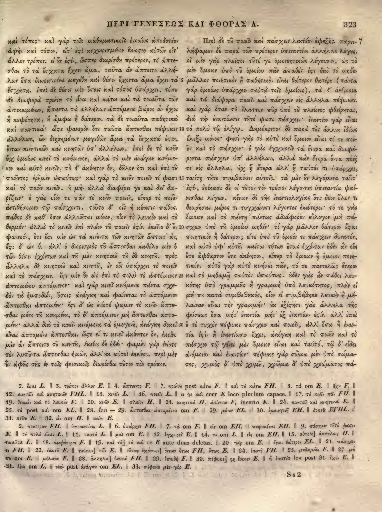

323a
| 1 | καὶ τόπος· καὶ γὰρ τοῖς μαθηματικοῖς ὁμοίως ἀποδοτέον | 0.95 |
|---|---|---|
| 2 | ἀφὴν καὶ τόπον, εἴτ' <choice resp="#hathiTrustOCR"><sic>ἐςὶ</sic><corr>ἐστὶ</corr></choice> κεχωρισμένον ἕκαστον αὐτῶν εἴτ' | 0.90 |
| 3 | ἄλλον τρόπον. εἰ δ' ἐν <choice resp="#hathiTrustOCR"><sic>ἐςίν</sic><corr>ἐστίν</corr></choice>, ὥσπερ διωρίσθη πρότερον, τὸ ἅπτε- | 0.90 |
| 4 | σθαι τὸ τὰ ἔσχατα ἔχειν ἅμα, ταῦτα ἂν ἅπτοιτο ἀλλή- | 0.90 |
| 5 | λων ὅσα διωρισμένα μεγέθη καὶ θέσιν ἔχοντα ἅμα ἔχει τὰ | 0.90 |
| 6 | ἔσχατα. ἐπεὶ δὲ θέσις μέν ἐστιν οἷς καὶ τόπος ὑπάρχει, <choice resp="#Mugler1966"><sic>τόπῳ</sic><corr>τόπου</corr></choice> | 0.90 |
| 7 | δὲ διαφορὰ πρώτη τὸ ἄνω καὶ κάτω καὶ τὰ τοιαῦτα τῶν | 0.90 |
| 8 | ἀντικειμένων, ἅπαντα τὰ ἀλλήλων ἁπτόμενα βάρος ἂν ἔχοι | 0.90 |
| 9 | ἢ κουφότητα, ἢ ἄμφω ἢ θάτερον. τὰ δὲ τοιαῦτα παθητικὰ | 0.90 |
| 10 | καὶ ποιητικά· ὥστε φανερὸν ὅτι ταῦτα ἅπτεσθαι πέφυκεν | 0.90 |
| 11 | ἀλλήλων, ὧν διῃρημένων μεγεθῶν ἅμα τὰ ἔσχατά ἐστιν, | 0.90 |
| 12 | ὄντων κινητικῶν καὶ κινητῶν ὑπ' ἀλλήλων. ἐπεὶ δὲ τὸ <choice resp="#Mugler1966"><sic>κινεῖν</sic><corr>κινοῦν</corr></choice> | 0.90 |
| 13 | οὐχ ὁμοίως κινεῖ τὸ κινούμενον, ἀλλὰ τὸ μὲν ἀνάγκη <choice resp="#Mugler1966"><sic>κινεῖσθαι</sic><corr>κινούμενον</corr></choice> | 0.90 |
| 14 | καὶ αὐτὸ κινεῖν, τὸ δ' ἀκίνητον ὄν, δῆλον ὅτι καὶ ἐπὶ <choice resp="#Mugler1966"><sic>τῶν</sic><corr>τοῦ</corr></choice> | 0.90 |
| 15 | ποιοῦντος ἐρέμεν ὡσαύτως· καὶ γὰρ τὸ <choice resp="#Mugler1966"><sic>κινεῖν</sic><corr>κινοῦν</corr></choice> ποιεῖν τί φασι | 0.90 |
| 16 | καὶ τὸ <choice resp="#Mugler1966"><sic>ποιεῖν</sic><corr>ποιοῦν</corr></choice> κινεῖν. <choice resp="#Mugler1966"><sic>ὁ</sic><corr>Οὐ</corr></choice> μὴν ἀλλὰ διαφέρει γε καὶ δεῖ διο- | 0.90 |
| 17 | ρίζειν· <choice resp="#Mugler1966"><sic>ὁ</sic><corr>οὐ</corr></choice> γὰρ οἷόν τε πᾶν τὸ <choice resp="#Mugler1966"><sic>κινεῖν</sic><corr>κινοῦν</corr></choice> ποιεῖν, εἴπερ τὸ <choice resp="#Mugler1966"><sic>ποιεῖν</sic><corr>ποιοῦν</corr></choice> | 0.90 |
| 18 | ἀντιθήσομεν τῷ πάσχοντι. τοῦτο δ' οἷς ἡ κίνησις πάθος. | 0.90 |
| 19 | πάθος δὲ καθ' ὅσον ἀλλοιοῦται μόνον, οἷον τὸ λευκὸν καὶ τὸ | 0.90 |
| 20 | θερμόν· ἀλλὰ τὸ κινεῖν ἐπὶ πλέον τοῦ ποιεῖν ἐστίν. ἐκεῖνο δ' <choice resp="#Mugler1966"><sic>ἐν</sic><corr>οὖν</corr></choice> | 0.90 |
| 21 | φανερόν, ὅτι ἐστὶ μὲν ὡς τὰ κινοῦντα τῶν κινητῶν ἅπτοιτ' ἄν, | 0.90 |
| 22 | ἔστι δ' ὡς οὔ. ἀλλ' ὁ διορισμὸς τοῦ ἅπτεσθαι καθόλου μὲν ὁ | 0.90 |
| 23 | τῶν θέσιν ἐχόντων καὶ <choice resp="#Mugler1966"><sic>τὸ</sic><corr>τοῦ</corr></choice> μὲν κινητικὸν <choice resp="#Mugler1966"><sic>τὸ</sic><corr>τοῦ</corr></choice> δὲ κινητόν, πρὸς | 0.90 |
| 24 | ἄλληλα δὲ κινητικὸν καὶ <choice resp="#Mugler1966"><sic>κινητόν</sic><corr>κινητοῦ</corr></choice>, ἐν οἷς ὑπάρχει τὸ ποιεῖν | 0.90 |
| 25 | καὶ τὸ πάσχειν. ἔστι μὲν οὖν ὡς ἐπὶ τὸ πολὺ τὸ ἁπτόμενον | 0.90 |
| 26 | ἁπτομένου <choice resp="#Mugler1966"><sic>ἅπτεσθαι</sic><corr>ἁπτόμενον</corr></choice>· καὶ γὰρ κινεῖ κινούμενα πάντα σχε- | 0.90 |
| 27 | δὸν <choice resp="#hathiTrustOCR"><sic>τὰ ἐμποδίων</sic><corr>τὰ ἐμποδών</corr></choice>, ὅσοις ἀνάγκη καὶ φαίνεται τὸ ἁπτόμενον | 0.90 |
| 28 | ἅπτεσθαι ἁπτομένου· ἔστι δ' ὡς ἐνίοτε φαμὲν τὸ κινοῦν ἅπτε- | 0.90 |
| 29 | σθαι <choice resp="#Mugler1966"><sic>μόνον</sic><corr>μόνου</corr></choice> τοῦ κινουμένου, τὸ δ' ἁπτόμενον μὴ ἅπτεσθαι ἁπτο- | 0.90 |
| 30 | μένου· ἀλλὰ διὰ τὸ κινεῖν κινούμενα τὰ ὁμογενῆ, ἀνάγκη δοκεῖ | 0.90 |
| 31 | εἶναι <choice resp="#Mugler1966"><sic>ἁπτόμενον</sic><corr>ἁπτομένου</corr></choice> ἅπτεσθαι. ὥστε εἴ τι κινεῖ ἀκίνητον ὄν, ἐκεῖνο | 0.90 |
| 32 | μὲν ἂν ἅπτοιτο τοῦ κινητοῦ, <choice resp="#Mugler1966"><sic>ἐκεῖνο</sic><corr>ἐκείνου</corr></choice> δὲ οὐδέν· φαμὲν γὰρ ἐνίοτε | 0.90 |
| 33 | τὸν λυποῦντα ἅπτεσθαι ἡμῶν, ἀλλ' οὐκ <choice resp="#Mugler1966"><sic>αὐτὸς</sic><corr>αὐτοὶ</corr></choice> ἐκείνου. περὶ μὲν | 0.90 |
| 34 | οὖν ἀφῆς τῆς ἐν τοῖς φυσικοῖς διωρίσθω τὸν τρόπον. | 0.90 |
323b
| Book 1, chapter 7 | ||
|---|---|---|
| 1 | Περὶ δὲ <choice resp="#Mugler1966"><sic>τῶ</sic><corr>τοῦ</corr></choice> ποιεῖν καὶ πάσχειν λεκτέον ἐφεξῆς. παρει- | 0.95 |
| 2 | λήφαμεν δὲ παρὰ τῶν πρότερον <choice resp="#Mugler1966"><sic>ὑπεναντίως</sic><corr>ὑπεναντίους</corr></choice> ἀλλήλοις λόγους. | 0.95 |
| 3 | οἱ μὲν γὰρ πλεῖστοι <choice resp="#Mugler1966"><sic>τό</sic><corr>τοῦτό</corr></choice> γε ὁμονοητικῶς λέγουσιν, ὡς τὸ | 0.95 |
| 4 | μὲν ὅμοιον ὑπὸ <choice resp="#Mugler1966"><sic>τῶ</sic><corr>τοῦ</corr></choice> <choice resp="#Mugler1966"><sic>ὁμοίω</sic><corr>ὁμοίου</corr></choice> πᾶν ἀπαθὲς ἐστι διὰ τὸ μηδὲν | 0.95 |
| 5 | μᾶλλον ποιητικὸν ἢ παθητικὸν εἶναι θάτερον <choice resp="#Mugler1966"><sic>θατέρω</sic><corr>θατέρου</corr></choice> (πάντα | 0.95 |
| 6 | γὰρ ὁμοίως ὑπάρχειν ταῦτα τοῖς ὁμοίοις), τὰ δ’ ἀνόμοια | 0.95 |
| 7 | καὶ τὰ διάφορα ποιεῖν καὶ πάσχειν εἰς ἄλληλα πέφυκεν. | 0.95 |
| 8 | καὶ γὰρ ὅταν τὸ ἔλαττον πῦρ ὑπὸ <choice resp="#Mugler1966"><sic>τῶ</sic><corr>τοῦ</corr></choice> πλείονος φθείρηται, | 0.95 |
| 9 | διὰ τὴν ἐναντίωσιν <choice resp="#Mugler1966"><sic>τότο</sic><corr>τοῦτό</corr></choice> φασι πάσχειν· ἐναντίον γὰρ εἶναι | 0.90 |
| 10 | τὸ πολὺ τῶ ὀλίγω. Δημόκριτος δὲ παρὰ τὰς ἄλλας ἰδίως | 0.95 |
| 11 | ἔλεξε μόνος· φησὶ γὰρ τὸ αὐτὸ καὶ ὅμοιον εἶναι τό τε ποι- | 0.95 |
| 12 | εῖν καὶ τὸ πάσχον· <choice resp="#Mugler1966"><sic>ὃ</sic><corr>οὐ</corr></choice> γὰρ ἐγχωρεῖν τὰ ἕτερα καὶ διαφέ- | 0.95 |
| 13 | ροντα πάσχειν ὑπ’ ἀλλήλων, ἀλλὰ κἂν ἕτερα ὄντα ποιῇ | 0.95 |
| 14 | τι εἰς ἄλληλα, οὐχ ᾗ ἕτερα ἀλλ’ ᾗ ταὐτόν τι ὑπάρχει, | 0.95 |
| 15 | ταύτῃ <choice resp="#Mugler1966"><sic>τότο</sic><corr>τοῦτο</corr></choice> συμβαίνειν αὐτοῖς. τὰ μὲν <choice resp="#Mugler1966"><sic>ἐν</sic><corr>οὖν</corr></choice> λεγόμενα ταῦτ’ | 0.95 |
| 16 | <choice resp="#hathiTrustOCR"><sic>ἐσίν</sic><corr>ἐστίν</corr></choice>, ἐοίκασι δὲ οἱ <choice resp="#Mugler1966"><sic>τότον</sic><corr>τοῦτον</corr></choice> τὸν τρόπον λέγοντες ὑπεναντία φαί- | 0.95 |
| 17 | νεσθαι λέγειν. αἴτιον δὲ τῆς ἐναντιολογίας ὅτι <choice resp="#Mugler1966"><sic>δεῖ</sic><corr>δέον</corr></choice> ὅλον τι | 0.95 |
| 18 | θεωρῆσαι μέρος τι τυγχάνουσι λέγοντες ἑκάτεροι· τό τε γὰρ | 0.95 |
| 19 | ὅμοιον καὶ τὸ πάντη πάντως ἀδιάφορον εὔλογον μὴ πά- | 0.95 |
| 20 | σχειν ὑπὸ <choice resp="#Mugler1966"><sic>τῶ</sic><corr>τοῦ</corr></choice> ὁμοίου <choice resp="#Mugler1966"><sic>μηδέν</sic><corr>μηθέν</corr></choice>· τί γὰρ μᾶλλον θάτερον <choice resp="#hathiTrustOCR"><sic>ἔςαι</sic><corr>ἔσται</corr></choice> | 0.95 |
| 21 | ποιητικὸν ἢ θάτερον; εἴτε ὑπὸ <choice resp="#Mugler1966"><sic>τῶ</sic><corr>τοῦ</corr></choice> <choice resp="#Mugler1966"><sic>ὁμοίω</sic><corr>ὁμοίου</corr></choice> τι πάσχειν δυνατόν, | 0.95 |
| 22 | καὶ αὐτὸ ὑφ’ <choice resp="#Mugler1966"><sic>αὑτῶ</sic><corr>αὑτοῦ</corr></choice>. καίτοι <choice resp="#Mugler1966"><sic>τότων</sic><corr>τούτων</corr></choice> οὕτως ἐχόντων οὐδὲν ἂν εἴη | 0.95 |
| 23 | οὔτε ἄφθαρτον οὔτε ἀκίνητον, εἴπερ τὸ ὅμοιον ἢ ὅμοιον ποιη- | 0.95 |
| 24 | τικόν. αὐτὸ γὰρ αὑτὸ κινήσει πᾶν, τό τε παντελῶς ἕτερον | 0.95 |
| 25 | καὶ τὸ <choice resp="#Mugler1966"><sic>μηδαμῇ</sic><corr>μηθαμῇ</corr></choice> ταὐτὸν ὡσαύτως. οὐδὲν γὰρ ἂν πάθοι λευ- | 0.95 |
| 26 | κότης ὑπὸ γραμμῆς ἢ γραμμὴ ὑπὸ λευκότητος, πλὴν εἰ | 0.95 |
| 27 | μή <choice resp="#Mugler1966"><sic>τι</sic><corr>που</corr></choice> κατὰ συμβεβηκός, οἷον εἰ συμβέβηκε λευκὴν ἢ μέ- | 0.95 |
| 28 | λαιναν εἶναι τὴν γραμμήν. ἐκ ἐξίσης γὰρ ἄλληλα τῆς | 0.95 |
| 29 | φύσεως ὅσα μήτ’ ἐναντία μήτ’ ἐξ ἐναντίων <choice resp="#hathiTrustOCR"><sic>ἐσίν</sic><corr>ἐστίν</corr></choice>. ἀλλ’ ἐπεὶ | 0.95 |
| 30 | οὐ τὸ τυχὸν πέφυκε πάσχειν καὶ ποιεῖν, ἀλλ’ ὅσα ἢ ἐναν- | 0.95 |
| 31 | τία <choice resp="#Mugler1966"><sic>ἐσίν</sic><corr>ἐστὶν</corr></choice> ἢ ἐναντίωσιν ἔχει, ἀνάγκη καὶ τὸ <choice resp="#Mugler1966"><sic>ποιὸν</sic><corr>ποιοῦν</corr></choice> καὶ τὸ | 0.95 |
| 32 | πάσχον τῶ γένει μὲν ὅμοιον εἶναι καὶ ταὐτό, τῶ δ’ εἴδει | 0.95 |
| 33 | ἀνόμοιον καὶ ἐναντίον· πέφυκε γὰρ σῶμα μὲν ὑπὸ σώμα- | 0.95 |
| 34 | τος, χυμὸς δ’ ὑπὸ <choice resp="#Mugler1966"><sic>χυμῶ</sic><corr>χυμοῦ</corr></choice>, χρῶμα δ’ ὑπὸ χρώματος πά- | 0.95 |
Textual apparatus
- n1 [both] 31. κεῖνο L. ‖ 32. αν om H. ‖ κεῖνο L.
- n2 [both] <choice resp="#hathiTrustOCR"><sic>2. προτέρων FH. ‖ ὑπεναντίοις L. ‖ 6. ὑπάρχει FH. ‖ 7. τὰ om F. ‖ εἰς om EH. ‖ πεφυκέναι EH. ‖ 9. πάσχειν τέτό φασιν E. ‖ τὸ πολὺ εἶναι L. ‖ 11. ταὐτὸ L. ‖ καὶ om E. ‖ 12. ἐγχωρεῖ E. ‖ 14. τι om L. ‖ εἰς om EH. ‖ 15. αὐτοῖς] ἀλλήλοις H. ‖ τοιαῦτα L. ‖ 18. ἀμφότεροι F. ‖ 19. καὶ τὸ] τὸ καὶ τὸ E ante duas deletas. ‖ 20. γὰρ om E. ‖ ἑκαι θάτερον EL. ‖ 21. πάσχειν τι FH. ‖ 22. ἑαυτῷ F. ‖ τούτων] τῶν E. ‖ οὕτως ἐχόντων] ὅτων ἔτως FH, ἔτως E. ‖ 24. ἑαυτὸ FH. ‖ 25. μηδαμῶς F. ‖ 27. μή πω om E. ‖ μέλανα F. ‖ 28. ἄλληλα] ἑαυτὰ FH. ‖ 29. ἐπειδὴ F. ‖ 30. πέφυκε] ὡς ἔοικεν E. ‖ ἡ ἐναντία ἐστιν post 31. ἔχει E. ‖ 31. ἐστι om L. ‖ καὶ post ἀνάγκη om EL. ‖ 33. πέφυκε μὲν γὰρ E.</sic><corr>2. προτέρων FH. ‖ ὑπεναντίοις L. ‖ 6. ὑπάρχει FH. ‖ 7. τὰ om F. ‖ εἰς om EH. ‖ πεφυκέναι EH. ‖ 9. πάσχειν τέτό φασιν E. ‖ τὸ πολὺ εἶναι L. ‖ 11. ταὐτὸ L. ‖ καὶ om E. ‖ 12. ἐγχωρεῖ E. ‖ 14. τι om L. ‖ εἰς om EH. ‖ 15. αὐτοῖς] ἀλλήλοις H. ‖ τοιαῦτα L. ‖ 18. ἀμφότεροι F. ‖ 19. καὶ τὸ] τὸ καὶ τὸ E ante duas deletas. ‖ 20. γὰρ om E. ‖ ἔσται θάτερον EL. ‖ 21. πάσχειν τι FH. ‖ 22. ἑαυτῷ F. ‖ τούτων] τῶν E. ‖ οὕτως ἐχόντων] ὅτων ἔτως FH, ἔτως E. ‖ 24. ἑαυτὸ FH. ‖ 25. μηδαμῶς F. ‖ 27. μή πω om E. ‖ μέλανα F. ‖ 28. ἄλληλα] ἑαυτὰ FH. ‖ 29. ἐπειδὴ F. ‖ 30. πέφυκε] ὡς ἔοικεν E. ‖ ἡ ἐναντία ἐστιν post 31. ἔχει E. ‖ 31. ἐστι om L. ‖ καὶ post ἀνάγκη om EL. ‖ 33. πέφυκε μὲν γὰρ E.</corr></choice>
Verifier issues
- error Column b, line 9: The extraction reads 'τότο' but the scan shows the ligature 'τὸ' (tau-omicron with accent). The repeated 'το' is a misreading of the ligature.
- error Column b, line 15: The extraction reads 'τότο' but the scan shows 'τὸ'.
- error Column b, line 16: The extraction reads 'τότον' but the scan shows 'τὸν'.
- error Column b, line 22: The extraction reads 'τότων' but the scan shows 'τῶν'.
- error Column b, line 29: The extraction reads 'ἐσίν' but the scan shows the στ ligature 'ἐστίν'. A final sigma inside a word is impossible and signals a missed tau.
- error Column b, line 31: The extraction reads 'ἐσίν' but the scan shows 'ἐστίν'.
- error Column b, line 4: The extraction reads 'τῶ' but the scan shows 'τοῦ'. The ου ligature was misread as a single omega.
- error Column b, line 8: The extraction reads 'τῶ' but the scan shows 'τοῦ'.
- error Column b, line 10: The extraction reads 'τῶ' but the scan shows 'τοῦ'.
- error Column b, line 20: The extraction reads 'τῶ' but the scan shows 'τοῦ'.
- error Column b, line 21: The extraction reads 'τῶ' but the scan shows 'τοῦ'.
- error Column b, line 22: The extraction reads 'αὑτῶ' but the scan shows 'αὑτοῦ'.
- error Column b, line 32: The extraction reads 'τῶ' but the scan shows 'τοῦ'.
- error Column b, line 34: The extraction reads 'χυμῶ' but the scan shows 'χυμοῦ'.
- error Column b, line 1: The extraction reads 'τῶ' but the scan shows 'τοῦ'.
- error Column b, line 28: The extraction reads 'ἐκ ἐξίσης' but the scan shows 'ἐξ ἐξίσης'.
- error Column b, line 15: The extraction reads 'ἐν' but the scan shows 'οὖν'.
- error Column b, line 22: The extraction reads 'αὑτῶ' but the scan shows 'αὑτοῦ'.
- error Column b, line 32: The extraction reads 'ταὐτό' but the scan shows 'ταὐτὸ'.
- error Column b, line 34: The extraction reads 'χρώματος' but the scan shows 'χρώματος'.
All Greek-word differences from Mugler 1966 (86)
This inventory is exhaustive at the Greek-word level; it does not imply that either reading is an error.
- orthographic_or_diacritic 323a2: ἀφὴν ↔ ἁφὴν (anchors: ἀποδοτέον … καὶ)
- orthographic_or_diacritic 323a3: εἰ ↔ Εἰ (anchors: τρόπον … δ)
- replace 323a3: δ ἐν ↔ οὖν (anchors: εἰ … ἐστίν)
- orthographic_or_diacritic 323a6: ἐπεὶ ↔ Ἐπεὶ (anchors: ἔσχατα … δὲ)
- orthographic_or_diacritic 323a6: μέν ↔ μὲν (anchors: θέσις … ἐστιν)
- replace 323a6: ἐστιν οἷς ↔ ὅσοις (anchors: μέν … καὶ)
- replace 323a6: τόπῳ ↔ τόπου (anchors: ὑπάρχει … δὲ)
- insert 323a7: ∅ ↔ τὸ (anchors: καὶ … κάτω)
- orthographic_or_diacritic 323a9: τὰ ↔ Τὰ (anchors: θάτερον … δὲ)
- orthographic_or_diacritic 323a12: ἐπεὶ ↔ Ἐπεὶ (anchors: ἀλλήλων … δὲ)
- replace 323a12: κινεῖν ↔ κινοῦν (anchors: τὸ … οὐχ)
- replace 323a13: κινεῖσθαι ↔ κινούμενον (anchors: ἀνάγκη … καὶ)
- replace 323a14: τῶν ↔ τοῦ (anchors: ἐπὶ … ποιοῦντος)
- replace 323a15: ἐρέμεν ↔ ἐροῦμεν (anchors: ποιοῦντος … ὡσαύτως)
- replace 323a15: κινεῖν ↔ κινοῦν (anchors: τὸ … ποιεῖν)
- replace 323a16: ποιεῖν ↔ ποιοῦν (anchors: τὸ … κινεῖν)
- replace 323a16: ὁ ↔ Οὐ (anchors: κινεῖν … μὴν)
- replace 323a17: ὁ ↔ οὐ (anchors: διορίζειν … γὰρ)
- replace 323a17: κινεῖν ↔ κινοῦν (anchors: τὸ … ποιεῖν)
- replace 323a17: ποιεῖν ↔ ποιοῦν (anchors: τὸ … ἀντιθήσομεν)
- orthographic_or_diacritic 323a19: πάθος ↔ Πάθος (anchors: πάθος … δὲ)
- orthographic_or_diacritic 323a20: ἐστίν ↔ ἐστιν (anchors: ποιεῖν … ἐκεῖνο)
- orthographic_or_diacritic 323a20: ἐκεῖνο ↔ Ἐκεῖνο (anchors: ἐστίν … δ)
- replace 323a20: ἐν ↔ οὖν (anchors: δ … φανερόν)
- orthographic_or_diacritic 323a21: ἐστὶ ↔ ἔστι (anchors: ὅτι … μὲν)
- orthographic_or_diacritic 323a22: ἀλλ ↔ Ἀλλ (anchors: οὔ … ὁ)
- replace 323a23: τὸ ↔ τοῦ (anchors: καὶ … μὲν)
- replace 323a23: κινητικὸν τὸ ↔ κινητικοῦ τοῦ (anchors: μὲν … δὲ)
- replace 323a23: κινητόν ↔ κινητοῦ (anchors: δὲ … πρὸς)
- replace 323a24: κινητικὸν ↔ κινητικοῦ (anchors: δὲ … καὶ)
- replace 323a24: κινητόν ↔ κινητοῦ (anchors: καὶ … ἐν)
- orthographic_or_diacritic 323a25: ἔστι ↔ Ἔστι (anchors: πάσχειν … μὲν)
- replace 323a26: ἅπτεσθαι ↔ ἁπτόμενον (anchors: ἁπτομένου … καὶ)
- replace 323a27: ἐμποδίων ↔ ἐμποδών (anchors: τὰ … ὅσοις)
- orthographic_or_diacritic 323a28: ἐνίοτε ↔ ἐνίοτέ (anchors: ὡς … φαμὲν)
- orthographic_or_diacritic 323a28: φαμὲν ↔ φαμεν (anchors: ἐνίοτε … τὸ)
- replace 323a29: μόνον ↔ μόνου (anchors: ἅπτεσθαι … τοῦ)
- replace 323a31: ἁπτόμενον ↔ ἁπτομένου (anchors: εἶναι … ἅπτεσθαι)
- orthographic_or_diacritic 323a31: ὥστε ↔ Ὥστε (anchors: ἅπτεσθαι … εἴ)
- replace 323a32: ἐκεῖνο ↔ ἐκείνου (anchors: κινητοῦ … δὲ)
- replace 323a33: αὐτὸς ↔ αὐτοὶ (anchors: οὐκ … ἐκείνου)
- orthographic_or_diacritic 323a33: περὶ ↔ Περὶ (anchors: ἐκείνου … μὲν)
- orthographic_or_diacritic 323a34: ἀφῆς ↔ ἁφῆς (anchors: οὖν … τῆς)
- insert 323a34: ∅ ↔ τοῦτον (anchors: διωρίσθω … τὸν)
- replace 323b1: τῶ ↔ τοῦ (anchors: δὲ … ποιεῖν)
- replace 323b2: ὑπεναντίως ↔ ὑπεναντίους (anchors: πρότερον … ἀλλήλοις)
- orthographic_or_diacritic 323b3: οἱ ↔ Οἱ (anchors: λόγους … μὲν)
- replace 323b3: τό ↔ τοῦτό (anchors: πλεῖστοι … γε)
- replace 323b4: τῶ ὁμοίω ↔ τοῦ ὁμοίου (anchors: ὑπὸ … πᾶν)
- orthographic_or_diacritic 323b4: ἀπαθὲς ↔ ἀπαθές (anchors: πᾶν … ἐστι)
- replace 323b5: θατέρω ↔ θατέρου (anchors: θάτερον … πάντα)
- orthographic_or_diacritic 323b6: ταῦτα ↔ ταὐτὰ (anchors: ὑπάρχειν … τοῖς)
- orthographic_or_diacritic 323b8: καὶ ↔ Καὶ (anchors: πέφυκεν … γὰρ)
- replace 323b8: τῶ ↔ τοῦ (anchors: ὑπὸ … πλείονος)
- replace 323b9: τότο ↔ τοῦτό (anchors: ἐναντίωσιν … φασι)
- orthographic_or_diacritic 323b10: τῶ ↔ τῷ (anchors: πολὺ … ὀλίγω)
- orthographic_or_diacritic 323b10: ὀλίγω ↔ ὀλίγῳ (anchors: τῶ … Δημόκριτος)
- replace 323b10: τὰς ἄλλας ↔ τοὺς ἄλλους (anchors: παρὰ … ἰδίως)
- replace 323b11: ποιεῖν ↔ ποιοῦν (anchors: τε … καὶ)
- replace 323b12: ὃ ↔ οὐ (anchors: πάσχον … γὰρ)
- replace 323b15: τότο ↔ τοῦτο (anchors: ταύτῃ … συμβαίνειν)
- orthographic_or_diacritic 323b15: τὰ ↔ Τὰ (anchors: αὐτοῖς … μὲν)
- replace 323b15: ἐν ↔ οὖν (anchors: μὲν … λεγόμενα)
- replace 323b16: ἐσίν ↔ ἐστίν (anchors: ταῦτ … ἐοίκασι)
- replace 323b16: τότον ↔ τοῦτον (anchors: οἱ … τὸν)
- orthographic_or_diacritic 323b17: αἴτιον ↔ Αἴτιον (anchors: λέγειν … δὲ)
- replace 323b17: δεῖ ↔ δέον (anchors: ὅτι … ὅλον)
- orthographic_or_diacritic 323b19: πάντη ↔ πάντῃ (anchors: τὸ … πάντως)
- replace 323b20: τῶ ↔ τοῦ (anchors: ὑπὸ … ὁμοίου)
- replace 323b20: μηδέν ↔ μηθέν (anchors: ὁμοίου … τί)
- replace 323b21: εἴτε ↔ εἴ τε (anchors: θάτερον … ὑπὸ)
- replace 323b21: τῶ ὁμοίω ↔ τοῦ ὁμοίου (anchors: ὑπὸ … τι)
- replace 323b22: αὑτῶ ↔ αὑτοῦ (anchors: ὑφ … καίτοι)
- replace 323b22: τότων ↔ τούτων (anchors: καίτοι … οὕτως)
- orthographic_or_diacritic 323b23: ἢ ↔ ᾗ (anchors: ὅμοιον … ὅμοιον)
- replace 323b25: μηδαμῇ ↔ μηθαμῇ (anchors: τὸ … ταὐτὸν)
- replace 323b27: τι ↔ που (anchors: μή … κατὰ)
- replace 323b28: ἐκ ἐξίσης ↔ οὐκ ἐξίστησι (anchors: γραμμήν … γὰρ)
- replace 323b29: ἐσίν ↔ ἐστίν (anchors: ἐναντίων … ἀλλ)
- orthographic_or_diacritic 323b29: ἀλλ ↔ Ἀλλ (anchors: ἐσίν … ἐπεὶ)
- replace 323b31: ἐσίν ↔ ἐστὶν (anchors: ἐναντία … ἢ)
- replace 323b31: ποιὸν ↔ ποιοῦν (anchors: τὸ … καὶ)
- orthographic_or_diacritic 323b32: τῶ ↔ τῷ (anchors: πάσχον … γένει)
- orthographic_or_diacritic 323b32: τῶ ↔ τῷ (anchors: ταὐτό … δ)
- replace 323b34: χυμῶ ↔ χυμοῦ (anchors: ὑπὸ … χρῶμα)
- replace 323b34: πά σχειν ↔ πάσχειν (anchors: χρώματος … ὅλως)
Encoded TEI choices (50)
- a27
#hathiTrustOCR: <choice resp="#hathiTrustOCR"><sic>τὰ ἐμποδίων</sic><corr>τὰ ἐμποδών</corr></choice> (0.90) — The scan shows ἐμποδών (adverb), not ἐμποδίων. - apparatus
#hathiTrustOCR: <choice resp="#hathiTrustOCR"><sic>2. προτέρων FH. ‖ ὑπεναντίοις L. ‖ 6. ὑπάρχει FH. ‖ 7. τὰ om F. ‖ εἰς om EH. ‖ πεφυκέναι EH. ‖ 9. πάσχειν τέτό φασιν E. ‖ τὸ πολὺ εἶναι L. ‖ 11. ταὐτὸ L. ‖ καὶ om E. ‖ 12. ἐγχωρεῖ E. ‖ 14. τι om L. ‖ εἰς om EH. ‖ 15. αὐτοῖς] ἀλλήλοις H. ‖ τοιαῦτα L. ‖ 18. ἀμφότεροι F. ‖ 19. καὶ τὸ] τὸ καὶ τὸ E ante duas deletas. ‖ 20. γὰρ om E. ‖ ἑκαι θάτερον EL. ‖ 21. πάσχειν τι FH. ‖ 22. ἑαυτῷ F. ‖ τούτων] τῶν E. ‖ οὕτως ἐχόντων] ὅτων ἔτως FH, ἔτως E. ‖ 24. ἑαυτὸ FH. ‖ 25. μηδαμῶς F. ‖ 27. μή πω om E. ‖ μέλανα F. ‖ 28. ἄλληλα] ἑαυτὰ FH. ‖ 29. ἐπειδὴ F. ‖ 30. πέφυκε] ὡς ἔοικεν E. ‖ ἡ ἐναντία ἐστιν post 31. ἔχει E. ‖ 31. ἐστι om L. ‖ καὶ post ἀνάγκη om EL. ‖ 33. πέφυκε μὲν γὰρ E.</sic><corr>2. προτέρων FH. ‖ ὑπεναντίοις L. ‖ 6. ὑπάρχει FH. ‖ 7. τὰ om F. ‖ εἰς om EH. ‖ πεφυκέναι EH. ‖ 9. πάσχειν τέτό φασιν E. ‖ τὸ πολὺ εἶναι L. ‖ 11. ταὐτὸ L. ‖ καὶ om E. ‖ 12. ἐγχωρεῖ E. ‖ 14. τι om L. ‖ εἰς om EH. ‖ 15. αὐτοῖς] ἀλλήλοις H. ‖ τοιαῦτα L. ‖ 18. ἀμφότεροι F. ‖ 19. καὶ τὸ] τὸ καὶ τὸ E ante duas deletas. ‖ 20. γὰρ om E. ‖ ἔσται θάτερον EL. ‖ 21. πάσχειν τι FH. ‖ 22. ἑαυτῷ F. ‖ τούτων] τῶν E. ‖ οὕτως ἐχόντων] ὅτων ἔτως FH, ἔτως E. ‖ 24. ἑαυτὸ FH. ‖ 25. μηδαμῶς F. ‖ 27. μή πω om E. ‖ μέλανα F. ‖ 28. ἄλληλα] ἑαυτὰ FH. ‖ 29. ἐπειδὴ F. ‖ 30. πέφυκε] ὡς ἔοικεν E. ‖ ἡ ἐναντία ἐστιν post 31. ἔχει E. ‖ 31. ἐστι om L. ‖ καὶ post ἀνάγκη om EL. ‖ 33. πέφυκε μὲν γὰρ E.</corr></choice> (0.90) — The apparatus scan shows ἔσται θάτερον EL, not ἑκαι θάτερον EL. - a2
#hathiTrustOCR: <choice resp="#hathiTrustOCR"><sic>ἐςὶ</sic><corr>ἐστὶ</corr></choice> (1.00) — Aligned Hathi στ-ligature OCR correction: deterministic repair of the Hathi internal final sigma agrees with the scan and reference crop. - a3
#hathiTrustOCR: <choice resp="#hathiTrustOCR"><sic>ἐςίν</sic><corr>ἐστίν</corr></choice> (1.00) — Aligned Hathi στ-ligature OCR correction: deterministic repair of the Hathi internal final sigma agrees with the scan and reference crop. - b16
#hathiTrustOCR: <choice resp="#hathiTrustOCR"><sic>ἐσίν</sic><corr>ἐστίν</corr></choice> (1.00) — Aligned Hathi στ-ligature OCR correction: deterministic repair of the Hathi internal final sigma agrees with the scan and reference crop. - b20
#hathiTrustOCR: <choice resp="#hathiTrustOCR"><sic>ἔςαι</sic><corr>ἔσται</corr></choice> (1.00) — Aligned Hathi στ-ligature OCR correction: deterministic repair of the Hathi internal final sigma agrees with the scan and reference crop. - b29
#hathiTrustOCR: <choice resp="#hathiTrustOCR"><sic>ἐσίν</sic><corr>ἐστίν</corr></choice> (1.00) — Aligned Hathi στ-ligature OCR correction: deterministic repair of the Hathi internal final sigma agrees with the scan and reference crop. - a6
#Mugler1966: <choice resp="#Mugler1966"><sic>τόπῳ</sic><corr>τόπου</corr></choice> (1.00) — Control-edition confirmation of the compact Berlin Bekker ου ligature; the OCR omitted upsilon and produced an impossible or contextually invalid Greek form. - a16
#Mugler1966: <choice resp="#Mugler1966"><sic>ὁ</sic><corr>Οὐ</corr></choice> (1.00) — Control-edition confirmation of the compact Berlin Bekker ου ligature; the OCR omitted upsilon and produced an impossible or contextually invalid Greek form. - a17
#Mugler1966: <choice resp="#Mugler1966"><sic>ὁ</sic><corr>οὐ</corr></choice> (1.00) — Control-edition confirmation of the compact Berlin Bekker ου ligature; the OCR omitted upsilon and produced an impossible or contextually invalid Greek form. - a23
#Mugler1966: <choice resp="#Mugler1966"><sic>τὸ</sic><corr>τοῦ</corr></choice> (1.00) — Control-edition confirmation of the compact Berlin Bekker ου ligature; the OCR omitted upsilon and produced an impossible or contextually invalid Greek form. - a23
#Mugler1966: <choice resp="#Mugler1966"><sic>τὸ</sic><corr>τοῦ</corr></choice> (1.00) — Control-edition confirmation of the compact Berlin Bekker ου ligature; the OCR omitted upsilon and produced an impossible or contextually invalid Greek form. - a32
#Mugler1966: <choice resp="#Mugler1966"><sic>ἐκεῖνο</sic><corr>ἐκείνου</corr></choice> (1.00) — Control-edition confirmation of the compact Berlin Bekker ου ligature; the OCR omitted upsilon and produced an impossible or contextually invalid Greek form. - b1
#Mugler1966: <choice resp="#Mugler1966"><sic>τῶ</sic><corr>τοῦ</corr></choice> (1.00) — Control-edition confirmation of the compact Berlin Bekker ου ligature; the OCR omitted upsilon and produced an impossible or contextually invalid Greek form. - b2
#Mugler1966: <choice resp="#Mugler1966"><sic>ὑπεναντίως</sic><corr>ὑπεναντίους</corr></choice> (1.00) — Control-edition confirmation of the compact Berlin Bekker ου ligature; the OCR omitted upsilon and produced an impossible or contextually invalid Greek form. - b4
#Mugler1966: <choice resp="#Mugler1966"><sic>τῶ</sic><corr>τοῦ</corr></choice> (1.00) — Control-edition confirmation of the compact Berlin Bekker ου ligature; the OCR omitted upsilon and produced an impossible or contextually invalid Greek form. - b4
#Mugler1966: <choice resp="#Mugler1966"><sic>ὁμοίω</sic><corr>ὁμοίου</corr></choice> (1.00) — Control-edition confirmation of the compact Berlin Bekker ου ligature; the OCR omitted upsilon and produced an impossible or contextually invalid Greek form. - b5
#Mugler1966: <choice resp="#Mugler1966"><sic>θατέρω</sic><corr>θατέρου</corr></choice> (1.00) — Control-edition confirmation of the compact Berlin Bekker ου ligature; the OCR omitted upsilon and produced an impossible or contextually invalid Greek form. - b8
#Mugler1966: <choice resp="#Mugler1966"><sic>τῶ</sic><corr>τοῦ</corr></choice> (1.00) — Control-edition confirmation of the compact Berlin Bekker ου ligature; the OCR omitted upsilon and produced an impossible or contextually invalid Greek form. - b9
#Mugler1966: <choice resp="#Mugler1966"><sic>τότο</sic><corr>τοῦτό</corr></choice> (1.00) — Control-edition confirmation of the compact Berlin Bekker ου ligature; the OCR omitted upsilon and produced an impossible or contextually invalid Greek form. - b12
#Mugler1966: <choice resp="#Mugler1966"><sic>ὃ</sic><corr>οὐ</corr></choice> (1.00) — Control-edition confirmation of the compact Berlin Bekker ου ligature; the OCR omitted upsilon and produced an impossible or contextually invalid Greek form. - b15
#Mugler1966: <choice resp="#Mugler1966"><sic>τότο</sic><corr>τοῦτο</corr></choice> (1.00) — Control-edition confirmation of the compact Berlin Bekker ου ligature; the OCR omitted upsilon and produced an impossible or contextually invalid Greek form. - b16
#Mugler1966: <choice resp="#Mugler1966"><sic>τότον</sic><corr>τοῦτον</corr></choice> (1.00) — Control-edition confirmation of the compact Berlin Bekker ου ligature; the OCR omitted upsilon and produced an impossible or contextually invalid Greek form. - b20
#Mugler1966: <choice resp="#Mugler1966"><sic>τῶ</sic><corr>τοῦ</corr></choice> (1.00) — Control-edition confirmation of the compact Berlin Bekker ου ligature; the OCR omitted upsilon and produced an impossible or contextually invalid Greek form. - b21
#Mugler1966: <choice resp="#Mugler1966"><sic>τῶ</sic><corr>τοῦ</corr></choice> (1.00) — Control-edition confirmation of the compact Berlin Bekker ου ligature; the OCR omitted upsilon and produced an impossible or contextually invalid Greek form. - b21
#Mugler1966: <choice resp="#Mugler1966"><sic>ὁμοίω</sic><corr>ὁμοίου</corr></choice> (1.00) — Control-edition confirmation of the compact Berlin Bekker ου ligature; the OCR omitted upsilon and produced an impossible or contextually invalid Greek form. - b22
#Mugler1966: <choice resp="#Mugler1966"><sic>αὑτῶ</sic><corr>αὑτοῦ</corr></choice> (1.00) — Control-edition confirmation of the compact Berlin Bekker ου ligature; the OCR omitted upsilon and produced an impossible or contextually invalid Greek form. - b22
#Mugler1966: <choice resp="#Mugler1966"><sic>τότων</sic><corr>τούτων</corr></choice> (1.00) — Control-edition confirmation of the compact Berlin Bekker ου ligature; the OCR omitted upsilon and produced an impossible or contextually invalid Greek form. - b31
#Mugler1966: <choice resp="#Mugler1966"><sic>ποιὸν</sic><corr>ποιοῦν</corr></choice> (1.00) — Control-edition confirmation of the compact Berlin Bekker ου ligature; the OCR omitted upsilon and produced an impossible or contextually invalid Greek form. - b34
#Mugler1966: <choice resp="#Mugler1966"><sic>χυμῶ</sic><corr>χυμοῦ</corr></choice> (1.00) — Control-edition confirmation of the compact Berlin Bekker ου ligature; the OCR omitted upsilon and produced an impossible or contextually invalid Greek form. - a12
#Mugler1966: <choice resp="#Mugler1966"><sic>κινεῖν</sic><corr>κινοῦν</corr></choice> (0.90) — Plausible one-token difference in the globally aligned Mugler 1966; surrounding token sequence is stable. - a13
#Mugler1966: <choice resp="#Mugler1966"><sic>κινεῖσθαι</sic><corr>κινούμενον</corr></choice> (0.90) — Plausible one-token difference in the globally aligned Mugler 1966; surrounding token sequence is stable. - a14
#Mugler1966: <choice resp="#Mugler1966"><sic>τῶν</sic><corr>τοῦ</corr></choice> (0.90) — Plausible one-token difference in the globally aligned Mugler 1966; surrounding token sequence is stable. - a15
#Mugler1966: <choice resp="#Mugler1966"><sic>κινεῖν</sic><corr>κινοῦν</corr></choice> (0.90) — Plausible one-token difference in the globally aligned Mugler 1966; surrounding token sequence is stable. - a16
#Mugler1966: <choice resp="#Mugler1966"><sic>ποιεῖν</sic><corr>ποιοῦν</corr></choice> (0.90) — Plausible one-token difference in the globally aligned Mugler 1966; surrounding token sequence is stable. - a17
#Mugler1966: <choice resp="#Mugler1966"><sic>κινεῖν</sic><corr>κινοῦν</corr></choice> (0.90) — Plausible one-token difference in the globally aligned Mugler 1966; surrounding token sequence is stable. - a17
#Mugler1966: <choice resp="#Mugler1966"><sic>ποιεῖν</sic><corr>ποιοῦν</corr></choice> (0.90) — Plausible one-token difference in the globally aligned Mugler 1966; surrounding token sequence is stable. - a20
#Mugler1966: <choice resp="#Mugler1966"><sic>ἐν</sic><corr>οὖν</corr></choice> (0.90) — Plausible one-token difference in the globally aligned Mugler 1966; surrounding token sequence is stable. - a24
#Mugler1966: <choice resp="#Mugler1966"><sic>κινητόν</sic><corr>κινητοῦ</corr></choice> (0.90) — Plausible one-token difference in the globally aligned Mugler 1966; surrounding token sequence is stable. - a26
#Mugler1966: <choice resp="#Mugler1966"><sic>ἅπτεσθαι</sic><corr>ἁπτόμενον</corr></choice> (0.90) — Plausible one-token difference in the globally aligned Mugler 1966; surrounding token sequence is stable. - a29
#Mugler1966: <choice resp="#Mugler1966"><sic>μόνον</sic><corr>μόνου</corr></choice> (0.90) — Plausible one-token difference in the globally aligned Mugler 1966; surrounding token sequence is stable. - a31
#Mugler1966: <choice resp="#Mugler1966"><sic>ἁπτόμενον</sic><corr>ἁπτομένου</corr></choice> (0.90) — Plausible one-token difference in the globally aligned Mugler 1966; surrounding token sequence is stable. - a33
#Mugler1966: <choice resp="#Mugler1966"><sic>αὐτὸς</sic><corr>αὐτοὶ</corr></choice> (0.90) — Plausible one-token difference in the globally aligned Mugler 1966; surrounding token sequence is stable. - b3
#Mugler1966: <choice resp="#Mugler1966"><sic>τό</sic><corr>τοῦτό</corr></choice> (0.90) — Plausible one-token difference in the globally aligned Mugler 1966; surrounding token sequence is stable. - b15
#Mugler1966: <choice resp="#Mugler1966"><sic>ἐν</sic><corr>οὖν</corr></choice> (0.90) — Plausible one-token difference in the globally aligned Mugler 1966; surrounding token sequence is stable. - b17
#Mugler1966: <choice resp="#Mugler1966"><sic>δεῖ</sic><corr>δέον</corr></choice> (0.90) — Plausible one-token difference in the globally aligned Mugler 1966; surrounding token sequence is stable. - b20
#Mugler1966: <choice resp="#Mugler1966"><sic>μηδέν</sic><corr>μηθέν</corr></choice> (0.90) — Plausible one-token difference in the globally aligned Mugler 1966; surrounding token sequence is stable. - b25
#Mugler1966: <choice resp="#Mugler1966"><sic>μηδαμῇ</sic><corr>μηθαμῇ</corr></choice> (0.90) — Plausible one-token difference in the globally aligned Mugler 1966; surrounding token sequence is stable. - b27
#Mugler1966: <choice resp="#Mugler1966"><sic>τι</sic><corr>που</corr></choice> (0.90) — Plausible one-token difference in the globally aligned Mugler 1966; surrounding token sequence is stable. - b31
#Mugler1966: <choice resp="#Mugler1966"><sic>ἐσίν</sic><corr>ἐστὶν</corr></choice> (0.90) — Plausible one-token difference in the globally aligned Mugler 1966; surrounding token sequence is stable.
Unmatched Hathi OCR words (161)
Compared after στ/ου normalization and scan-attested line-end dehyphenation. OCR line numbers refer to the Hathi text file.
| Normalized | Raw OCR | OCR line | Context |
|---|---|---|---|
| περι | περι | 1 | ΠΕΡΙ ΓΕΝΕΣΕΩΣ ΚΑΙ ΦΘΟΡΑΣ Α. ⏎ 323 |
| γενεσεως | γενεσεως | 1 | ΠΕΡΙ ΓΕΝΕΣΕΩΣ ΚΑΙ ΦΘΟΡΑΣ Α. ⏎ 323 |
| και | και | 1 | ΠΕΡΙ ΓΕΝΕΣΕΩΣ ΚΑΙ ΦΘΟΡΑΣ Α. ⏎ 323 |
| φθορας | φθορας | 1 | ΠΕΡΙ ΓΕΝΕΣΕΩΣ ΚΑΙ ΦΘΟΡΑΣ Α. ⏎ 323 |
| α | α | 1 | ΠΕΡΙ ΓΕΝΕΣΕΩΣ ΚΑΙ ΦΘΟΡΑΣ Α. ⏎ 323 |
| α | α | 3 | 323 ⏎ Α ⏎ καὶ τόπος· καὶ γὰρ τοῖς μαθηματικοῖς ὁμοίως ἀποδοτέον Περὶ δὲ τῇ ποιεῖν καὶ πάσχειν λεκτέον ἐφεξῆς. παρει- |
| τῇ | τῇ | 4 | Α ⏎ καὶ τόπος· καὶ γὰρ τοῖς μαθηματικοῖς ὁμοίως ἀποδοτέον Περὶ δὲ τῇ ποιεῖν καὶ πάσχειν λεκτέον ἐφεξῆς. παρει- ⏎ ἀφὴν καὶ τόπον, εἴτ᾿ ἐςὶ κεχωρισμένον ἔκαςον αὐτῶν εἴτ᾿ λήφαμεν δὲ παρὰ τῶν πρότερον ὑπεναντίας ἀλλήλοις λόγοις. |
| εἴτ᾿ | εἴτ᾿ | 5 | καὶ τόπος· καὶ γὰρ τοῖς μαθηματικοῖς ὁμοίως ἀποδοτέον Περὶ δὲ τῇ ποιεῖν καὶ πάσχειν λεκτέον ἐφεξῆς. παρει- ⏎ ἀφὴν καὶ τόπον, εἴτ᾿ ἐςὶ κεχωρισμένον ἔκαςον αὐτῶν εἴτ᾿ λήφαμεν δὲ παρὰ τῶν πρότερον ὑπεναντίας ἀλλήλοις λόγοις. ⏎ ἄλλον τρόπον. εἰ ἔν ἐςίν, ὥσπερ διωρίσθη πρότερον, τὸ ἅπτε- οἱ μὲν γὰρ πλείςοι τότό γε ὁμονοητικῶς λέγουσιν, ὡς τὸ |
| ἔκαστον | ἔκαςον | 5 | καὶ τόπος· καὶ γὰρ τοῖς μαθηματικοῖς ὁμοίως ἀποδοτέον Περὶ δὲ τῇ ποιεῖν καὶ πάσχειν λεκτέον ἐφεξῆς. παρει- ⏎ ἀφὴν καὶ τόπον, εἴτ᾿ ἐςὶ κεχωρισμένον ἔκαςον αὐτῶν εἴτ᾿ λήφαμεν δὲ παρὰ τῶν πρότερον ὑπεναντίας ἀλλήλοις λόγοις. ⏎ ἄλλον τρόπον. εἰ ἔν ἐςίν, ὥσπερ διωρίσθη πρότερον, τὸ ἅπτε- οἱ μὲν γὰρ πλείςοι τότό γε ὁμονοητικῶς λέγουσιν, ὡς τὸ |
| εἴτ᾿ | εἴτ᾿ | 5 | καὶ τόπος· καὶ γὰρ τοῖς μαθηματικοῖς ὁμοίως ἀποδοτέον Περὶ δὲ τῇ ποιεῖν καὶ πάσχειν λεκτέον ἐφεξῆς. παρει- ⏎ ἀφὴν καὶ τόπον, εἴτ᾿ ἐςὶ κεχωρισμένον ἔκαςον αὐτῶν εἴτ᾿ λήφαμεν δὲ παρὰ τῶν πρότερον ὑπεναντίας ἀλλήλοις λόγοις. ⏎ ἄλλον τρόπον. εἰ ἔν ἐςίν, ὥσπερ διωρίσθη πρότερον, τὸ ἅπτε- οἱ μὲν γὰρ πλείςοι τότό γε ὁμονοητικῶς λέγουσιν, ὡς τὸ |
| ὑπεναντίας | ὑπεναντίας | 5 | καὶ τόπος· καὶ γὰρ τοῖς μαθηματικοῖς ὁμοίως ἀποδοτέον Περὶ δὲ τῇ ποιεῖν καὶ πάσχειν λεκτέον ἐφεξῆς. παρει- ⏎ ἀφὴν καὶ τόπον, εἴτ᾿ ἐςὶ κεχωρισμένον ἔκαςον αὐτῶν εἴτ᾿ λήφαμεν δὲ παρὰ τῶν πρότερον ὑπεναντίας ἀλλήλοις λόγοις. ⏎ ἄλλον τρόπον. εἰ ἔν ἐςίν, ὥσπερ διωρίσθη πρότερον, τὸ ἅπτε- οἱ μὲν γὰρ πλείςοι τότό γε ὁμονοητικῶς λέγουσιν, ὡς τὸ |
| λόγοις | λόγοις | 5 | καὶ τόπος· καὶ γὰρ τοῖς μαθηματικοῖς ὁμοίως ἀποδοτέον Περὶ δὲ τῇ ποιεῖν καὶ πάσχειν λεκτέον ἐφεξῆς. παρει- ⏎ ἀφὴν καὶ τόπον, εἴτ᾿ ἐςὶ κεχωρισμένον ἔκαςον αὐτῶν εἴτ᾿ λήφαμεν δὲ παρὰ τῶν πρότερον ὑπεναντίας ἀλλήλοις λόγοις. ⏎ ἄλλον τρόπον. εἰ ἔν ἐςίν, ὥσπερ διωρίσθη πρότερον, τὸ ἅπτε- οἱ μὲν γὰρ πλείςοι τότό γε ὁμονοητικῶς λέγουσιν, ὡς τὸ |
| ἔν | ἔν | 6 | ἀφὴν καὶ τόπον, εἴτ᾿ ἐςὶ κεχωρισμένον ἔκαςον αὐτῶν εἴτ᾿ λήφαμεν δὲ παρὰ τῶν πρότερον ὑπεναντίας ἀλλήλοις λόγοις. ⏎ ἄλλον τρόπον. εἰ ἔν ἐςίν, ὥσπερ διωρίσθη πρότερον, τὸ ἅπτε- οἱ μὲν γὰρ πλείςοι τότό γε ὁμονοητικῶς λέγουσιν, ὡς τὸ ⏎ σθαι τὸ τὰ ἔσχατα ἔχειν ἅμα, ταῦτα ἂν ἅπτοιτο ἀλλή- μὲν ὅμοιον ὑπὸ τὸ ὁμοίου πᾶν ἀπαθές ἐςι διὰ τὸ μηδὲν |
| πλείστοι | πλείςοι | 6 | ἀφὴν καὶ τόπον, εἴτ᾿ ἐςὶ κεχωρισμένον ἔκαςον αὐτῶν εἴτ᾿ λήφαμεν δὲ παρὰ τῶν πρότερον ὑπεναντίας ἀλλήλοις λόγοις. ⏎ ἄλλον τρόπον. εἰ ἔν ἐςίν, ὥσπερ διωρίσθη πρότερον, τὸ ἅπτε- οἱ μὲν γὰρ πλείςοι τότό γε ὁμονοητικῶς λέγουσιν, ὡς τὸ ⏎ σθαι τὸ τὰ ἔσχατα ἔχειν ἅμα, ταῦτα ἂν ἅπτοιτο ἀλλή- μὲν ὅμοιον ὑπὸ τὸ ὁμοίου πᾶν ἀπαθές ἐςι διὰ τὸ μηδὲν |
| τότό | τότό | 6 | ἀφὴν καὶ τόπον, εἴτ᾿ ἐςὶ κεχωρισμένον ἔκαςον αὐτῶν εἴτ᾿ λήφαμεν δὲ παρὰ τῶν πρότερον ὑπεναντίας ἀλλήλοις λόγοις. ⏎ ἄλλον τρόπον. εἰ ἔν ἐςίν, ὥσπερ διωρίσθη πρότερον, τὸ ἅπτε- οἱ μὲν γὰρ πλείςοι τότό γε ὁμονοητικῶς λέγουσιν, ὡς τὸ ⏎ σθαι τὸ τὰ ἔσχατα ἔχειν ἅμα, ταῦτα ἂν ἅπτοιτο ἀλλή- μὲν ὅμοιον ὑπὸ τὸ ὁμοίου πᾶν ἀπαθές ἐςι διὰ τὸ μηδὲν |
| ἀπαθές | ἀπαθές | 7 | ἄλλον τρόπον. εἰ ἔν ἐςίν, ὥσπερ διωρίσθη πρότερον, τὸ ἅπτε- οἱ μὲν γὰρ πλείςοι τότό γε ὁμονοητικῶς λέγουσιν, ὡς τὸ ⏎ σθαι τὸ τὰ ἔσχατα ἔχειν ἅμα, ταῦτα ἂν ἅπτοιτο ἀλλή- μὲν ὅμοιον ὑπὸ τὸ ὁμοίου πᾶν ἀπαθές ἐςι διὰ τὸ μηδὲν ⏎ λων ὅσα διωρισμένα μεγέθη καὶ θέσιν ἔχοντα ἅμα ἔχει τα 5 μᾶλλον ποιητικὸν ἢ παθητικὸν εἶναι θάτερον θατέρω (πάντα |
| τα | τα | 8 | σθαι τὸ τὰ ἔσχατα ἔχειν ἅμα, ταῦτα ἂν ἅπτοιτο ἀλλή- μὲν ὅμοιον ὑπὸ τὸ ὁμοίου πᾶν ἀπαθές ἐςι διὰ τὸ μηδὲν ⏎ λων ὅσα διωρισμένα μεγέθη καὶ θέσιν ἔχοντα ἅμα ἔχει τα 5 μᾶλλον ποιητικὸν ἢ παθητικὸν εἶναι θάτερον θατέρω (πάντα ⏎ ἔσχατα. ἐπεὶ δὲ θέσις μὲν ὅσοις καὶ τόπος ὑπάρχει, τόπε γὰρ ὁμοίως ὑπάρχειν ταὐτὰ τοῖς ὁμοίοις), τὰ δ᾽ ἀνόμοια |
| τόπε | τόπε | 9 | λων ὅσα διωρισμένα μεγέθη καὶ θέσιν ἔχοντα ἅμα ἔχει τα 5 μᾶλλον ποιητικὸν ἢ παθητικὸν εἶναι θάτερον θατέρω (πάντα ⏎ ἔσχατα. ἐπεὶ δὲ θέσις μὲν ὅσοις καὶ τόπος ὑπάρχει, τόπε γὰρ ὁμοίως ὑπάρχειν ταὐτὰ τοῖς ὁμοίοις), τὰ δ᾽ ἀνόμοια ⏎ δὲ διαφορὰ πρώτη τὸ ἄνω καὶ κάτω καὶ τὰ τοιαῦτα τῶν καὶ τὰ διάφορα ποιεῖν καὶ πάσχειν εἰς ἄλληλα πέφυκεν. |
| ταὐτὰ | ταὐτὰ | 9 | λων ὅσα διωρισμένα μεγέθη καὶ θέσιν ἔχοντα ἅμα ἔχει τα 5 μᾶλλον ποιητικὸν ἢ παθητικὸν εἶναι θάτερον θατέρω (πάντα ⏎ ἔσχατα. ἐπεὶ δὲ θέσις μὲν ὅσοις καὶ τόπος ὑπάρχει, τόπε γὰρ ὁμοίως ὑπάρχειν ταὐτὰ τοῖς ὁμοίοις), τὰ δ᾽ ἀνόμοια ⏎ δὲ διαφορὰ πρώτη τὸ ἄνω καὶ κάτω καὶ τὰ τοιαῦτα τῶν καὶ τὰ διάφορα ποιεῖν καὶ πάσχειν εἰς ἄλληλα πέφυκεν. |
| δ᾽ | δ᾽ | 9 | λων ὅσα διωρισμένα μεγέθη καὶ θέσιν ἔχοντα ἅμα ἔχει τα 5 μᾶλλον ποιητικὸν ἢ παθητικὸν εἶναι θάτερον θατέρω (πάντα ⏎ ἔσχατα. ἐπεὶ δὲ θέσις μὲν ὅσοις καὶ τόπος ὑπάρχει, τόπε γὰρ ὁμοίως ὑπάρχειν ταὐτὰ τοῖς ὁμοίοις), τὰ δ᾽ ἀνόμοια ⏎ δὲ διαφορὰ πρώτη τὸ ἄνω καὶ κάτω καὶ τὰ τοιαῦτα τῶν καὶ τὰ διάφορα ποιεῖν καὶ πάσχειν εἰς ἄλληλα πέφυκεν. |
| ἀπτόμενα | ἀπτόμενα | 11 | δὲ διαφορὰ πρώτη τὸ ἄνω καὶ κάτω καὶ τὰ τοιαῦτα τῶν καὶ τὰ διάφορα ποιεῖν καὶ πάσχειν εἰς ἄλληλα πέφυκεν. ⏎ ἀντικειμένων, ἅπαντα τὰ ἀλλήλων ἀπτόμενα βάρος ἂν ἔχοι καὶ γὰρ ὅταν τὸ ἔλαττον πῦρ ὑπὸ τὸ πλείονος φθείρηται, ⏎ ἢ κεφότητα, ἢ ἄμφω ἢ θάτερον. τὰ δὲ τοιαῦτα παθητικὰ διὰ τὴν ἐναντίωσιν τοτό φασι πάσχειν· ἐναντίον γὰρ εἶναι |
| τοτό | τοτό | 12 | ἀντικειμένων, ἅπαντα τὰ ἀλλήλων ἀπτόμενα βάρος ἂν ἔχοι καὶ γὰρ ὅταν τὸ ἔλαττον πῦρ ὑπὸ τὸ πλείονος φθείρηται, ⏎ ἢ κεφότητα, ἢ ἄμφω ἢ θάτερον. τὰ δὲ τοιαῦτα παθητικὰ διὰ τὴν ἐναντίωσιν τοτό φασι πάσχειν· ἐναντίον γὰρ εἶναι ⏎ καὶ ποιητικά· ὡςε φανερὸν ὅτι ταῦτα ἅπτεσθαι πέφυκεν 10 τὸ πολὺ τῷ ὀλίγῳ. Δημόκριτος δὲ παρὰ τὸς ἄλλες ἰδίως |
| ὡστε | ὡςε | 13 | ἢ κεφότητα, ἢ ἄμφω ἢ θάτερον. τὰ δὲ τοιαῦτα παθητικὰ διὰ τὴν ἐναντίωσιν τοτό φασι πάσχειν· ἐναντίον γὰρ εἶναι ⏎ καὶ ποιητικά· ὡςε φανερὸν ὅτι ταῦτα ἅπτεσθαι πέφυκεν 10 τὸ πολὺ τῷ ὀλίγῳ. Δημόκριτος δὲ παρὰ τὸς ἄλλες ἰδίως ⏎ ἀλλήλων, ὧν διηρημένων μεγεθῶν ἅμα τὰ ἔσχατά ἐςιν, ἔλεξε μόνος· φησὶ γὰρ τὸ αὐτὸ καὶ ὅμοιον εἶναι τό τε ποι- |
| ὀλίγῳ | ὀλίγῳ | 13 | ἢ κεφότητα, ἢ ἄμφω ἢ θάτερον. τὰ δὲ τοιαῦτα παθητικὰ διὰ τὴν ἐναντίωσιν τοτό φασι πάσχειν· ἐναντίον γὰρ εἶναι ⏎ καὶ ποιητικά· ὡςε φανερὸν ὅτι ταῦτα ἅπτεσθαι πέφυκεν 10 τὸ πολὺ τῷ ὀλίγῳ. Δημόκριτος δὲ παρὰ τὸς ἄλλες ἰδίως ⏎ ἀλλήλων, ὧν διηρημένων μεγεθῶν ἅμα τὰ ἔσχατά ἐςιν, ἔλεξε μόνος· φησὶ γὰρ τὸ αὐτὸ καὶ ὅμοιον εἶναι τό τε ποι- |
| τὸς | τὸς | 13 | ἢ κεφότητα, ἢ ἄμφω ἢ θάτερον. τὰ δὲ τοιαῦτα παθητικὰ διὰ τὴν ἐναντίωσιν τοτό φασι πάσχειν· ἐναντίον γὰρ εἶναι ⏎ καὶ ποιητικά· ὡςε φανερὸν ὅτι ταῦτα ἅπτεσθαι πέφυκεν 10 τὸ πολὺ τῷ ὀλίγῳ. Δημόκριτος δὲ παρὰ τὸς ἄλλες ἰδίως ⏎ ἀλλήλων, ὧν διηρημένων μεγεθῶν ἅμα τὰ ἔσχατά ἐςιν, ἔλεξε μόνος· φησὶ γὰρ τὸ αὐτὸ καὶ ὅμοιον εἶναι τό τε ποι- |
| ἄλλες | ἄλλες | 13 | ἢ κεφότητα, ἢ ἄμφω ἢ θάτερον. τὰ δὲ τοιαῦτα παθητικὰ διὰ τὴν ἐναντίωσιν τοτό φασι πάσχειν· ἐναντίον γὰρ εἶναι ⏎ καὶ ποιητικά· ὡςε φανερὸν ὅτι ταῦτα ἅπτεσθαι πέφυκεν 10 τὸ πολὺ τῷ ὀλίγῳ. Δημόκριτος δὲ παρὰ τὸς ἄλλες ἰδίως ⏎ ἀλλήλων, ὧν διηρημένων μεγεθῶν ἅμα τὰ ἔσχατά ἐςιν, ἔλεξε μόνος· φησὶ γὰρ τὸ αὐτὸ καὶ ὅμοιον εἶναι τό τε ποι- |
| διηρημένων | διηρημένων | 14 | καὶ ποιητικά· ὡςε φανερὸν ὅτι ταῦτα ἅπτεσθαι πέφυκεν 10 τὸ πολὺ τῷ ὀλίγῳ. Δημόκριτος δὲ παρὰ τὸς ἄλλες ἰδίως ⏎ ἀλλήλων, ὧν διηρημένων μεγεθῶν ἅμα τὰ ἔσχατά ἐςιν, ἔλεξε μόνος· φησὶ γὰρ τὸ αὐτὸ καὶ ὅμοιον εἶναι τό τε ποι- ⏎ ὄντων κινητικῶν καὶ κινητῶν ὑπ᾽ ἀλλήλων. ἐπεὶ δὲ τὸ κινῖν ὅν καὶ τὸ πάσχον· ἐ γὰρ ἐγχωρεῖν τὰ ἕτερα καὶ διαφέ- |
| ποι | ποι | 14 | καὶ ποιητικά· ὡςε φανερὸν ὅτι ταῦτα ἅπτεσθαι πέφυκεν 10 τὸ πολὺ τῷ ὀλίγῳ. Δημόκριτος δὲ παρὰ τὸς ἄλλες ἰδίως ⏎ ἀλλήλων, ὧν διηρημένων μεγεθῶν ἅμα τὰ ἔσχατά ἐςιν, ἔλεξε μόνος· φησὶ γὰρ τὸ αὐτὸ καὶ ὅμοιον εἶναι τό τε ποι- ⏎ ὄντων κινητικῶν καὶ κινητῶν ὑπ᾽ ἀλλήλων. ἐπεὶ δὲ τὸ κινῖν ὅν καὶ τὸ πάσχον· ἐ γὰρ ἐγχωρεῖν τὰ ἕτερα καὶ διαφέ- |
| ὑπ᾽ | ὑπ᾽ | 15 | ἀλλήλων, ὧν διηρημένων μεγεθῶν ἅμα τὰ ἔσχατά ἐςιν, ἔλεξε μόνος· φησὶ γὰρ τὸ αὐτὸ καὶ ὅμοιον εἶναι τό τε ποι- ⏎ ὄντων κινητικῶν καὶ κινητῶν ὑπ᾽ ἀλλήλων. ἐπεὶ δὲ τὸ κινῖν ὅν καὶ τὸ πάσχον· ἐ γὰρ ἐγχωρεῖν τὰ ἕτερα καὶ διαφέ- ⏎ ἐχ ὁμοίως κινεῖ τὸ κινόμενον, ἀλλὰ τὸ μὲν ἀνάγκη κινόμε- ροντα πάσχειν ὑπ᾽ ἀλλήλων, ἀλλὰ κἂν ἕτερα ὄντα ποιῇ |
| κινῖν | κινῖν | 15 | ἀλλήλων, ὧν διηρημένων μεγεθῶν ἅμα τὰ ἔσχατά ἐςιν, ἔλεξε μόνος· φησὶ γὰρ τὸ αὐτὸ καὶ ὅμοιον εἶναι τό τε ποι- ⏎ ὄντων κινητικῶν καὶ κινητῶν ὑπ᾽ ἀλλήλων. ἐπεὶ δὲ τὸ κινῖν ὅν καὶ τὸ πάσχον· ἐ γὰρ ἐγχωρεῖν τὰ ἕτερα καὶ διαφέ- ⏎ ἐχ ὁμοίως κινεῖ τὸ κινόμενον, ἀλλὰ τὸ μὲν ἀνάγκη κινόμε- ροντα πάσχειν ὑπ᾽ ἀλλήλων, ἀλλὰ κἂν ἕτερα ὄντα ποιῇ |
| ὅν | ὅν | 15 | ἀλλήλων, ὧν διηρημένων μεγεθῶν ἅμα τὰ ἔσχατά ἐςιν, ἔλεξε μόνος· φησὶ γὰρ τὸ αὐτὸ καὶ ὅμοιον εἶναι τό τε ποι- ⏎ ὄντων κινητικῶν καὶ κινητῶν ὑπ᾽ ἀλλήλων. ἐπεὶ δὲ τὸ κινῖν ὅν καὶ τὸ πάσχον· ἐ γὰρ ἐγχωρεῖν τὰ ἕτερα καὶ διαφέ- ⏎ ἐχ ὁμοίως κινεῖ τὸ κινόμενον, ἀλλὰ τὸ μὲν ἀνάγκη κινόμε- ροντα πάσχειν ὑπ᾽ ἀλλήλων, ἀλλὰ κἂν ἕτερα ὄντα ποιῇ |
| κινόμε | κινόμε | 16 | ὄντων κινητικῶν καὶ κινητῶν ὑπ᾽ ἀλλήλων. ἐπεὶ δὲ τὸ κινῖν ὅν καὶ τὸ πάσχον· ἐ γὰρ ἐγχωρεῖν τὰ ἕτερα καὶ διαφέ- ⏎ ἐχ ὁμοίως κινεῖ τὸ κινόμενον, ἀλλὰ τὸ μὲν ἀνάγκη κινόμε- ροντα πάσχειν ὑπ᾽ ἀλλήλων, ἀλλὰ κἂν ἕτερα ὄντα ποιῇ ⏎ νον καὶ αὐτὸ κινεῖν, τὸ δ᾽ ἀκίνητον ὄν, δῆλον ὅτι καὶ ἐπὶ τῇ τι εἰς ἄλληλα, εχ ἡ ἕτερα ἀλλ' ᾗ ταὐτόν τι ὑπάρχει, |
| ὑπ᾽ | ὑπ᾽ | 16 | ὄντων κινητικῶν καὶ κινητῶν ὑπ᾽ ἀλλήλων. ἐπεὶ δὲ τὸ κινῖν ὅν καὶ τὸ πάσχον· ἐ γὰρ ἐγχωρεῖν τὰ ἕτερα καὶ διαφέ- ⏎ ἐχ ὁμοίως κινεῖ τὸ κινόμενον, ἀλλὰ τὸ μὲν ἀνάγκη κινόμε- ροντα πάσχειν ὑπ᾽ ἀλλήλων, ἀλλὰ κἂν ἕτερα ὄντα ποιῇ ⏎ νον καὶ αὐτὸ κινεῖν, τὸ δ᾽ ἀκίνητον ὄν, δῆλον ὅτι καὶ ἐπὶ τῇ τι εἰς ἄλληλα, εχ ἡ ἕτερα ἀλλ' ᾗ ταὐτόν τι ὑπάρχει, |
| νον | νον | 17 | ἐχ ὁμοίως κινεῖ τὸ κινόμενον, ἀλλὰ τὸ μὲν ἀνάγκη κινόμε- ροντα πάσχειν ὑπ᾽ ἀλλήλων, ἀλλὰ κἂν ἕτερα ὄντα ποιῇ ⏎ νον καὶ αὐτὸ κινεῖν, τὸ δ᾽ ἀκίνητον ὄν, δῆλον ὅτι καὶ ἐπὶ τῇ τι εἰς ἄλληλα, εχ ἡ ἕτερα ἀλλ' ᾗ ταὐτόν τι ὑπάρχει, ⏎ ποιόντος ἐρῖμεν ὡσαύτως· καὶ γὰρ τὸ κινὸν ποιεῖν τί φασι 15 ταύτη τοτο συμβαίνειν αὐτοῖς. τὰ μὲν ἦν λεγόμενα ταῦτ᾽ |
| δ᾽ | δ᾽ | 17 | ἐχ ὁμοίως κινεῖ τὸ κινόμενον, ἀλλὰ τὸ μὲν ἀνάγκη κινόμε- ροντα πάσχειν ὑπ᾽ ἀλλήλων, ἀλλὰ κἂν ἕτερα ὄντα ποιῇ ⏎ νον καὶ αὐτὸ κινεῖν, τὸ δ᾽ ἀκίνητον ὄν, δῆλον ὅτι καὶ ἐπὶ τῇ τι εἰς ἄλληλα, εχ ἡ ἕτερα ἀλλ' ᾗ ταὐτόν τι ὑπάρχει, ⏎ ποιόντος ἐρῖμεν ὡσαύτως· καὶ γὰρ τὸ κινὸν ποιεῖν τί φασι 15 ταύτη τοτο συμβαίνειν αὐτοῖς. τὰ μὲν ἦν λεγόμενα ταῦτ᾽ |
| τῇ | τῇ | 17 | ἐχ ὁμοίως κινεῖ τὸ κινόμενον, ἀλλὰ τὸ μὲν ἀνάγκη κινόμε- ροντα πάσχειν ὑπ᾽ ἀλλήλων, ἀλλὰ κἂν ἕτερα ὄντα ποιῇ ⏎ νον καὶ αὐτὸ κινεῖν, τὸ δ᾽ ἀκίνητον ὄν, δῆλον ὅτι καὶ ἐπὶ τῇ τι εἰς ἄλληλα, εχ ἡ ἕτερα ἀλλ' ᾗ ταὐτόν τι ὑπάρχει, ⏎ ποιόντος ἐρῖμεν ὡσαύτως· καὶ γὰρ τὸ κινὸν ποιεῖν τί φασι 15 ταύτη τοτο συμβαίνειν αὐτοῖς. τὰ μὲν ἦν λεγόμενα ταῦτ᾽ |
| εχ | εχ | 17 | ἐχ ὁμοίως κινεῖ τὸ κινόμενον, ἀλλὰ τὸ μὲν ἀνάγκη κινόμε- ροντα πάσχειν ὑπ᾽ ἀλλήλων, ἀλλὰ κἂν ἕτερα ὄντα ποιῇ ⏎ νον καὶ αὐτὸ κινεῖν, τὸ δ᾽ ἀκίνητον ὄν, δῆλον ὅτι καὶ ἐπὶ τῇ τι εἰς ἄλληλα, εχ ἡ ἕτερα ἀλλ' ᾗ ταὐτόν τι ὑπάρχει, ⏎ ποιόντος ἐρῖμεν ὡσαύτως· καὶ γὰρ τὸ κινὸν ποιεῖν τί φασι 15 ταύτη τοτο συμβαίνειν αὐτοῖς. τὰ μὲν ἦν λεγόμενα ταῦτ᾽ |
| ποιόντος | ποιόντος | 18 | νον καὶ αὐτὸ κινεῖν, τὸ δ᾽ ἀκίνητον ὄν, δῆλον ὅτι καὶ ἐπὶ τῇ τι εἰς ἄλληλα, εχ ἡ ἕτερα ἀλλ' ᾗ ταὐτόν τι ὑπάρχει, ⏎ ποιόντος ἐρῖμεν ὡσαύτως· καὶ γὰρ τὸ κινὸν ποιεῖν τί φασι 15 ταύτη τοτο συμβαίνειν αὐτοῖς. τὰ μὲν ἦν λεγόμενα ταῦτ᾽ ⏎ καὶ τὸ ποιὸν κινεῖν. ἰ μὴν ἀλλὰ διαφέρει γε καὶ δεῖ διο- ἐςίν, ἐοίκασι δὲ οἱ τῦτον τὸν τρόπον λέγοντες ὑπεναντία φαί |
| ἐρῖμεν | ἐρῖμεν | 18 | νον καὶ αὐτὸ κινεῖν, τὸ δ᾽ ἀκίνητον ὄν, δῆλον ὅτι καὶ ἐπὶ τῇ τι εἰς ἄλληλα, εχ ἡ ἕτερα ἀλλ' ᾗ ταὐτόν τι ὑπάρχει, ⏎ ποιόντος ἐρῖμεν ὡσαύτως· καὶ γὰρ τὸ κινὸν ποιεῖν τί φασι 15 ταύτη τοτο συμβαίνειν αὐτοῖς. τὰ μὲν ἦν λεγόμενα ταῦτ᾽ ⏎ καὶ τὸ ποιὸν κινεῖν. ἰ μὴν ἀλλὰ διαφέρει γε καὶ δεῖ διο- ἐςίν, ἐοίκασι δὲ οἱ τῦτον τὸν τρόπον λέγοντες ὑπεναντία φαί |
| κινὸν | κινὸν | 18 | νον καὶ αὐτὸ κινεῖν, τὸ δ᾽ ἀκίνητον ὄν, δῆλον ὅτι καὶ ἐπὶ τῇ τι εἰς ἄλληλα, εχ ἡ ἕτερα ἀλλ' ᾗ ταὐτόν τι ὑπάρχει, ⏎ ποιόντος ἐρῖμεν ὡσαύτως· καὶ γὰρ τὸ κινὸν ποιεῖν τί φασι 15 ταύτη τοτο συμβαίνειν αὐτοῖς. τὰ μὲν ἦν λεγόμενα ταῦτ᾽ ⏎ καὶ τὸ ποιὸν κινεῖν. ἰ μὴν ἀλλὰ διαφέρει γε καὶ δεῖ διο- ἐςίν, ἐοίκασι δὲ οἱ τῦτον τὸν τρόπον λέγοντες ὑπεναντία φαί |
| ταύτη | ταύτη | 18 | νον καὶ αὐτὸ κινεῖν, τὸ δ᾽ ἀκίνητον ὄν, δῆλον ὅτι καὶ ἐπὶ τῇ τι εἰς ἄλληλα, εχ ἡ ἕτερα ἀλλ' ᾗ ταὐτόν τι ὑπάρχει, ⏎ ποιόντος ἐρῖμεν ὡσαύτως· καὶ γὰρ τὸ κινὸν ποιεῖν τί φασι 15 ταύτη τοτο συμβαίνειν αὐτοῖς. τὰ μὲν ἦν λεγόμενα ταῦτ᾽ ⏎ καὶ τὸ ποιὸν κινεῖν. ἰ μὴν ἀλλὰ διαφέρει γε καὶ δεῖ διο- ἐςίν, ἐοίκασι δὲ οἱ τῦτον τὸν τρόπον λέγοντες ὑπεναντία φαί |
| τοτο | τοτο | 18 | νον καὶ αὐτὸ κινεῖν, τὸ δ᾽ ἀκίνητον ὄν, δῆλον ὅτι καὶ ἐπὶ τῇ τι εἰς ἄλληλα, εχ ἡ ἕτερα ἀλλ' ᾗ ταὐτόν τι ὑπάρχει, ⏎ ποιόντος ἐρῖμεν ὡσαύτως· καὶ γὰρ τὸ κινὸν ποιεῖν τί φασι 15 ταύτη τοτο συμβαίνειν αὐτοῖς. τὰ μὲν ἦν λεγόμενα ταῦτ᾽ ⏎ καὶ τὸ ποιὸν κινεῖν. ἰ μὴν ἀλλὰ διαφέρει γε καὶ δεῖ διο- ἐςίν, ἐοίκασι δὲ οἱ τῦτον τὸν τρόπον λέγοντες ὑπεναντία φαί |
| ἦν | ἦν | 18 | νον καὶ αὐτὸ κινεῖν, τὸ δ᾽ ἀκίνητον ὄν, δῆλον ὅτι καὶ ἐπὶ τῇ τι εἰς ἄλληλα, εχ ἡ ἕτερα ἀλλ' ᾗ ταὐτόν τι ὑπάρχει, ⏎ ποιόντος ἐρῖμεν ὡσαύτως· καὶ γὰρ τὸ κινὸν ποιεῖν τί φασι 15 ταύτη τοτο συμβαίνειν αὐτοῖς. τὰ μὲν ἦν λεγόμενα ταῦτ᾽ ⏎ καὶ τὸ ποιὸν κινεῖν. ἰ μὴν ἀλλὰ διαφέρει γε καὶ δεῖ διο- ἐςίν, ἐοίκασι δὲ οἱ τῦτον τὸν τρόπον λέγοντες ὑπεναντία φαί |
| ταῦτ᾽ | ταῦτ᾽ | 18 | νον καὶ αὐτὸ κινεῖν, τὸ δ᾽ ἀκίνητον ὄν, δῆλον ὅτι καὶ ἐπὶ τῇ τι εἰς ἄλληλα, εχ ἡ ἕτερα ἀλλ' ᾗ ταὐτόν τι ὑπάρχει, ⏎ ποιόντος ἐρῖμεν ὡσαύτως· καὶ γὰρ τὸ κινὸν ποιεῖν τί φασι 15 ταύτη τοτο συμβαίνειν αὐτοῖς. τὰ μὲν ἦν λεγόμενα ταῦτ᾽ ⏎ καὶ τὸ ποιὸν κινεῖν. ἰ μὴν ἀλλὰ διαφέρει γε καὶ δεῖ διο- ἐςίν, ἐοίκασι δὲ οἱ τῦτον τὸν τρόπον λέγοντες ὑπεναντία φαί |
| τῦτον | τῦτον | 19 | ποιόντος ἐρῖμεν ὡσαύτως· καὶ γὰρ τὸ κινὸν ποιεῖν τί φασι 15 ταύτη τοτο συμβαίνειν αὐτοῖς. τὰ μὲν ἦν λεγόμενα ταῦτ᾽ ⏎ καὶ τὸ ποιὸν κινεῖν. ἰ μὴν ἀλλὰ διαφέρει γε καὶ δεῖ διο- ἐςίν, ἐοίκασι δὲ οἱ τῦτον τὸν τρόπον λέγοντες ὑπεναντία φαί ⏎ ρίζειν· ἐ γὰρ οἷόν τε πᾶν τὸ κινὸν ποιεῖν, εἴπερ τὸ ποιον νεσθαι λέγειν. αἴτιον δὲ τῆς ἐναντιολογίας ὅτι δέον ὅλον τι |
| φαί | φαί | 19 | ποιόντος ἐρῖμεν ὡσαύτως· καὶ γὰρ τὸ κινὸν ποιεῖν τί φασι 15 ταύτη τοτο συμβαίνειν αὐτοῖς. τὰ μὲν ἦν λεγόμενα ταῦτ᾽ ⏎ καὶ τὸ ποιὸν κινεῖν. ἰ μὴν ἀλλὰ διαφέρει γε καὶ δεῖ διο- ἐςίν, ἐοίκασι δὲ οἱ τῦτον τὸν τρόπον λέγοντες ὑπεναντία φαί ⏎ ρίζειν· ἐ γὰρ οἷόν τε πᾶν τὸ κινὸν ποιεῖν, εἴπερ τὸ ποιον νεσθαι λέγειν. αἴτιον δὲ τῆς ἐναντιολογίας ὅτι δέον ὅλον τι |
| κινὸν | κινὸν | 20 | καὶ τὸ ποιὸν κινεῖν. ἰ μὴν ἀλλὰ διαφέρει γε καὶ δεῖ διο- ἐςίν, ἐοίκασι δὲ οἱ τῦτον τὸν τρόπον λέγοντες ὑπεναντία φαί ⏎ ρίζειν· ἐ γὰρ οἷόν τε πᾶν τὸ κινὸν ποιεῖν, εἴπερ τὸ ποιον νεσθαι λέγειν. αἴτιον δὲ τῆς ἐναντιολογίας ὅτι δέον ὅλον τι ⏎ ἀντιθήσομεν τῷ πάσχοντι. τοῦτο δ᾽ οἷς ἡ κίνησις πάθος. θεωρῆσαι μέρος τι τυγχάνεσι λέγοντες ἑκάτεροι· τό τε γὰρ |
| ποιον | ποιον | 20 | καὶ τὸ ποιὸν κινεῖν. ἰ μὴν ἀλλὰ διαφέρει γε καὶ δεῖ διο- ἐςίν, ἐοίκασι δὲ οἱ τῦτον τὸν τρόπον λέγοντες ὑπεναντία φαί ⏎ ρίζειν· ἐ γὰρ οἷόν τε πᾶν τὸ κινὸν ποιεῖν, εἴπερ τὸ ποιον νεσθαι λέγειν. αἴτιον δὲ τῆς ἐναντιολογίας ὅτι δέον ὅλον τι ⏎ ἀντιθήσομεν τῷ πάσχοντι. τοῦτο δ᾽ οἷς ἡ κίνησις πάθος. θεωρῆσαι μέρος τι τυγχάνεσι λέγοντες ἑκάτεροι· τό τε γὰρ |
| νεσθαι | νεσθαι | 20 | καὶ τὸ ποιὸν κινεῖν. ἰ μὴν ἀλλὰ διαφέρει γε καὶ δεῖ διο- ἐςίν, ἐοίκασι δὲ οἱ τῦτον τὸν τρόπον λέγοντες ὑπεναντία φαί ⏎ ρίζειν· ἐ γὰρ οἷόν τε πᾶν τὸ κινὸν ποιεῖν, εἴπερ τὸ ποιον νεσθαι λέγειν. αἴτιον δὲ τῆς ἐναντιολογίας ὅτι δέον ὅλον τι ⏎ ἀντιθήσομεν τῷ πάσχοντι. τοῦτο δ᾽ οἷς ἡ κίνησις πάθος. θεωρῆσαι μέρος τι τυγχάνεσι λέγοντες ἑκάτεροι· τό τε γὰρ |
| δέον | δέον | 20 | καὶ τὸ ποιὸν κινεῖν. ἰ μὴν ἀλλὰ διαφέρει γε καὶ δεῖ διο- ἐςίν, ἐοίκασι δὲ οἱ τῦτον τὸν τρόπον λέγοντες ὑπεναντία φαί ⏎ ρίζειν· ἐ γὰρ οἷόν τε πᾶν τὸ κινὸν ποιεῖν, εἴπερ τὸ ποιον νεσθαι λέγειν. αἴτιον δὲ τῆς ἐναντιολογίας ὅτι δέον ὅλον τι ⏎ ἀντιθήσομεν τῷ πάσχοντι. τοῦτο δ᾽ οἷς ἡ κίνησις πάθος. θεωρῆσαι μέρος τι τυγχάνεσι λέγοντες ἑκάτεροι· τό τε γὰρ |
| δ᾽ | δ᾽ | 21 | ρίζειν· ἐ γὰρ οἷόν τε πᾶν τὸ κινὸν ποιεῖν, εἴπερ τὸ ποιον νεσθαι λέγειν. αἴτιον δὲ τῆς ἐναντιολογίας ὅτι δέον ὅλον τι ⏎ ἀντιθήσομεν τῷ πάσχοντι. τοῦτο δ᾽ οἷς ἡ κίνησις πάθος. θεωρῆσαι μέρος τι τυγχάνεσι λέγοντες ἑκάτεροι· τό τε γὰρ ⏎ πάθος δὲ καθ᾽ ὅσον ἀλλοιῶται μόνον, οἷον τὸ λευκὸν καὶ τὸ ὅμοιον καὶ τὸ πάντῃ πάντως ἀδιάφορον εὔλογον μὴ πά- |
| καθ᾽ | καθ᾽ | 22 | ἀντιθήσομεν τῷ πάσχοντι. τοῦτο δ᾽ οἷς ἡ κίνησις πάθος. θεωρῆσαι μέρος τι τυγχάνεσι λέγοντες ἑκάτεροι· τό τε γὰρ ⏎ πάθος δὲ καθ᾽ ὅσον ἀλλοιῶται μόνον, οἷον τὸ λευκὸν καὶ τὸ ὅμοιον καὶ τὸ πάντῃ πάντως ἀδιάφορον εὔλογον μὴ πά- ⏎ θερμόν· ἀλλὰ τὸ κινεῖν ἐπὶ πλέον τῇ ποιεῖν ἐςίν. ἐκεῖνο δ᾽ ἦν 20 σχειν ὑπὸ τὸ ὁμοίου μηθέν· τί γὰρ μᾶλλον θάτερον ἔςαι |
| πάντῃ | πάντῃ | 22 | ἀντιθήσομεν τῷ πάσχοντι. τοῦτο δ᾽ οἷς ἡ κίνησις πάθος. θεωρῆσαι μέρος τι τυγχάνεσι λέγοντες ἑκάτεροι· τό τε γὰρ ⏎ πάθος δὲ καθ᾽ ὅσον ἀλλοιῶται μόνον, οἷον τὸ λευκὸν καὶ τὸ ὅμοιον καὶ τὸ πάντῃ πάντως ἀδιάφορον εὔλογον μὴ πά- ⏎ θερμόν· ἀλλὰ τὸ κινεῖν ἐπὶ πλέον τῇ ποιεῖν ἐςίν. ἐκεῖνο δ᾽ ἦν 20 σχειν ὑπὸ τὸ ὁμοίου μηθέν· τί γὰρ μᾶλλον θάτερον ἔςαι |
| τῇ | τῇ | 23 | πάθος δὲ καθ᾽ ὅσον ἀλλοιῶται μόνον, οἷον τὸ λευκὸν καὶ τὸ ὅμοιον καὶ τὸ πάντῃ πάντως ἀδιάφορον εὔλογον μὴ πά- ⏎ θερμόν· ἀλλὰ τὸ κινεῖν ἐπὶ πλέον τῇ ποιεῖν ἐςίν. ἐκεῖνο δ᾽ ἦν 20 σχειν ὑπὸ τὸ ὁμοίου μηθέν· τί γὰρ μᾶλλον θάτερον ἔςαι ⏎ φανερέκ, ὅτι ἔτι μὲν ὡς τὰ κινῖντα τῶν κινητῶν ἅπτοιτ᾽ ἄν, ποιητικὸν ἢ θάτερον; εἴτε ὑπὸ τὸ ὁμοίς τι πάσχειν δυνατόν, |
| δ᾽ | δ᾽ | 23 | πάθος δὲ καθ᾽ ὅσον ἀλλοιῶται μόνον, οἷον τὸ λευκὸν καὶ τὸ ὅμοιον καὶ τὸ πάντῃ πάντως ἀδιάφορον εὔλογον μὴ πά- ⏎ θερμόν· ἀλλὰ τὸ κινεῖν ἐπὶ πλέον τῇ ποιεῖν ἐςίν. ἐκεῖνο δ᾽ ἦν 20 σχειν ὑπὸ τὸ ὁμοίου μηθέν· τί γὰρ μᾶλλον θάτερον ἔςαι ⏎ φανερέκ, ὅτι ἔτι μὲν ὡς τὰ κινῖντα τῶν κινητῶν ἅπτοιτ᾽ ἄν, ποιητικὸν ἢ θάτερον; εἴτε ὑπὸ τὸ ὁμοίς τι πάσχειν δυνατόν, |
| ἦν | ἦν | 23 | πάθος δὲ καθ᾽ ὅσον ἀλλοιῶται μόνον, οἷον τὸ λευκὸν καὶ τὸ ὅμοιον καὶ τὸ πάντῃ πάντως ἀδιάφορον εὔλογον μὴ πά- ⏎ θερμόν· ἀλλὰ τὸ κινεῖν ἐπὶ πλέον τῇ ποιεῖν ἐςίν. ἐκεῖνο δ᾽ ἦν 20 σχειν ὑπὸ τὸ ὁμοίου μηθέν· τί γὰρ μᾶλλον θάτερον ἔςαι ⏎ φανερέκ, ὅτι ἔτι μὲν ὡς τὰ κινῖντα τῶν κινητῶν ἅπτοιτ᾽ ἄν, ποιητικὸν ἢ θάτερον; εἴτε ὑπὸ τὸ ὁμοίς τι πάσχειν δυνατόν, |
| μηθέν | μηθέν | 23 | πάθος δὲ καθ᾽ ὅσον ἀλλοιῶται μόνον, οἷον τὸ λευκὸν καὶ τὸ ὅμοιον καὶ τὸ πάντῃ πάντως ἀδιάφορον εὔλογον μὴ πά- ⏎ θερμόν· ἀλλὰ τὸ κινεῖν ἐπὶ πλέον τῇ ποιεῖν ἐςίν. ἐκεῖνο δ᾽ ἦν 20 σχειν ὑπὸ τὸ ὁμοίου μηθέν· τί γὰρ μᾶλλον θάτερον ἔςαι ⏎ φανερέκ, ὅτι ἔτι μὲν ὡς τὰ κινῖντα τῶν κινητῶν ἅπτοιτ᾽ ἄν, ποιητικὸν ἢ θάτερον; εἴτε ὑπὸ τὸ ὁμοίς τι πάσχειν δυνατόν, |
| φανερέκ | φανερέκ | 24 | θερμόν· ἀλλὰ τὸ κινεῖν ἐπὶ πλέον τῇ ποιεῖν ἐςίν. ἐκεῖνο δ᾽ ἦν 20 σχειν ὑπὸ τὸ ὁμοίου μηθέν· τί γὰρ μᾶλλον θάτερον ἔςαι ⏎ φανερέκ, ὅτι ἔτι μὲν ὡς τὰ κινῖντα τῶν κινητῶν ἅπτοιτ᾽ ἄν, ποιητικὸν ἢ θάτερον; εἴτε ὑπὸ τὸ ὁμοίς τι πάσχειν δυνατόν, ⏎ ἔςι δ᾽ ὡς ἔ. ἀλλ᾽ ὁ διορισμὸς τὸ ἅπτεσθαι καθίλε μὲν ὁ καὶ αὐτὸ ὑφ᾽ αὑτο. καίτοι τέτων ὕτως ἐχόντων ἐδὲν ἂν εἴη |
| ἔτι | ἔτι | 24 | θερμόν· ἀλλὰ τὸ κινεῖν ἐπὶ πλέον τῇ ποιεῖν ἐςίν. ἐκεῖνο δ᾽ ἦν 20 σχειν ὑπὸ τὸ ὁμοίου μηθέν· τί γὰρ μᾶλλον θάτερον ἔςαι ⏎ φανερέκ, ὅτι ἔτι μὲν ὡς τὰ κινῖντα τῶν κινητῶν ἅπτοιτ᾽ ἄν, ποιητικὸν ἢ θάτερον; εἴτε ὑπὸ τὸ ὁμοίς τι πάσχειν δυνατόν, ⏎ ἔςι δ᾽ ὡς ἔ. ἀλλ᾽ ὁ διορισμὸς τὸ ἅπτεσθαι καθίλε μὲν ὁ καὶ αὐτὸ ὑφ᾽ αὑτο. καίτοι τέτων ὕτως ἐχόντων ἐδὲν ἂν εἴη |
| κινῖντα | κινῖντα | 24 | θερμόν· ἀλλὰ τὸ κινεῖν ἐπὶ πλέον τῇ ποιεῖν ἐςίν. ἐκεῖνο δ᾽ ἦν 20 σχειν ὑπὸ τὸ ὁμοίου μηθέν· τί γὰρ μᾶλλον θάτερον ἔςαι ⏎ φανερέκ, ὅτι ἔτι μὲν ὡς τὰ κινῖντα τῶν κινητῶν ἅπτοιτ᾽ ἄν, ποιητικὸν ἢ θάτερον; εἴτε ὑπὸ τὸ ὁμοίς τι πάσχειν δυνατόν, ⏎ ἔςι δ᾽ ὡς ἔ. ἀλλ᾽ ὁ διορισμὸς τὸ ἅπτεσθαι καθίλε μὲν ὁ καὶ αὐτὸ ὑφ᾽ αὑτο. καίτοι τέτων ὕτως ἐχόντων ἐδὲν ἂν εἴη |
| ἅπτοιτ᾽ | ἅπτοιτ᾽ | 24 | θερμόν· ἀλλὰ τὸ κινεῖν ἐπὶ πλέον τῇ ποιεῖν ἐςίν. ἐκεῖνο δ᾽ ἦν 20 σχειν ὑπὸ τὸ ὁμοίου μηθέν· τί γὰρ μᾶλλον θάτερον ἔςαι ⏎ φανερέκ, ὅτι ἔτι μὲν ὡς τὰ κινῖντα τῶν κινητῶν ἅπτοιτ᾽ ἄν, ποιητικὸν ἢ θάτερον; εἴτε ὑπὸ τὸ ὁμοίς τι πάσχειν δυνατόν, ⏎ ἔςι δ᾽ ὡς ἔ. ἀλλ᾽ ὁ διορισμὸς τὸ ἅπτεσθαι καθίλε μὲν ὁ καὶ αὐτὸ ὑφ᾽ αὑτο. καίτοι τέτων ὕτως ἐχόντων ἐδὲν ἂν εἴη |
| ὁμοίς | ὁμοίς | 24 | θερμόν· ἀλλὰ τὸ κινεῖν ἐπὶ πλέον τῇ ποιεῖν ἐςίν. ἐκεῖνο δ᾽ ἦν 20 σχειν ὑπὸ τὸ ὁμοίου μηθέν· τί γὰρ μᾶλλον θάτερον ἔςαι ⏎ φανερέκ, ὅτι ἔτι μὲν ὡς τὰ κινῖντα τῶν κινητῶν ἅπτοιτ᾽ ἄν, ποιητικὸν ἢ θάτερον; εἴτε ὑπὸ τὸ ὁμοίς τι πάσχειν δυνατόν, ⏎ ἔςι δ᾽ ὡς ἔ. ἀλλ᾽ ὁ διορισμὸς τὸ ἅπτεσθαι καθίλε μὲν ὁ καὶ αὐτὸ ὑφ᾽ αὑτο. καίτοι τέτων ὕτως ἐχόντων ἐδὲν ἂν εἴη |
| δ᾽ | δ᾽ | 25 | φανερέκ, ὅτι ἔτι μὲν ὡς τὰ κινῖντα τῶν κινητῶν ἅπτοιτ᾽ ἄν, ποιητικὸν ἢ θάτερον; εἴτε ὑπὸ τὸ ὁμοίς τι πάσχειν δυνατόν, ⏎ ἔςι δ᾽ ὡς ἔ. ἀλλ᾽ ὁ διορισμὸς τὸ ἅπτεσθαι καθίλε μὲν ὁ καὶ αὐτὸ ὑφ᾽ αὑτο. καίτοι τέτων ὕτως ἐχόντων ἐδὲν ἂν εἴη ⏎ τῶν θέσιν ἐχόντων καὶ τῇ μὲν κινητικᾶ τὸ δὲ κινητό, πρὸς ἔτε ἄφθαρτον ἔτε ἀκίνητον, εἴπερ τὸ ὅμοιον ᾗ ὅμοιον ποιη- |
| ἀλλ᾽ | ἀλλ᾽ | 25 | φανερέκ, ὅτι ἔτι μὲν ὡς τὰ κινῖντα τῶν κινητῶν ἅπτοιτ᾽ ἄν, ποιητικὸν ἢ θάτερον; εἴτε ὑπὸ τὸ ὁμοίς τι πάσχειν δυνατόν, ⏎ ἔςι δ᾽ ὡς ἔ. ἀλλ᾽ ὁ διορισμὸς τὸ ἅπτεσθαι καθίλε μὲν ὁ καὶ αὐτὸ ὑφ᾽ αὑτο. καίτοι τέτων ὕτως ἐχόντων ἐδὲν ἂν εἴη ⏎ τῶν θέσιν ἐχόντων καὶ τῇ μὲν κινητικᾶ τὸ δὲ κινητό, πρὸς ἔτε ἄφθαρτον ἔτε ἀκίνητον, εἴπερ τὸ ὅμοιον ᾗ ὅμοιον ποιη- |
| καθίλε | καθίλε | 25 | φανερέκ, ὅτι ἔτι μὲν ὡς τὰ κινῖντα τῶν κινητῶν ἅπτοιτ᾽ ἄν, ποιητικὸν ἢ θάτερον; εἴτε ὑπὸ τὸ ὁμοίς τι πάσχειν δυνατόν, ⏎ ἔςι δ᾽ ὡς ἔ. ἀλλ᾽ ὁ διορισμὸς τὸ ἅπτεσθαι καθίλε μὲν ὁ καὶ αὐτὸ ὑφ᾽ αὑτο. καίτοι τέτων ὕτως ἐχόντων ἐδὲν ἂν εἴη ⏎ τῶν θέσιν ἐχόντων καὶ τῇ μὲν κινητικᾶ τὸ δὲ κινητό, πρὸς ἔτε ἄφθαρτον ἔτε ἀκίνητον, εἴπερ τὸ ὅμοιον ᾗ ὅμοιον ποιη- |
| ὑφ᾽ | ὑφ᾽ | 25 | φανερέκ, ὅτι ἔτι μὲν ὡς τὰ κινῖντα τῶν κινητῶν ἅπτοιτ᾽ ἄν, ποιητικὸν ἢ θάτερον; εἴτε ὑπὸ τὸ ὁμοίς τι πάσχειν δυνατόν, ⏎ ἔςι δ᾽ ὡς ἔ. ἀλλ᾽ ὁ διορισμὸς τὸ ἅπτεσθαι καθίλε μὲν ὁ καὶ αὐτὸ ὑφ᾽ αὑτο. καίτοι τέτων ὕτως ἐχόντων ἐδὲν ἂν εἴη ⏎ τῶν θέσιν ἐχόντων καὶ τῇ μὲν κινητικᾶ τὸ δὲ κινητό, πρὸς ἔτε ἄφθαρτον ἔτε ἀκίνητον, εἴπερ τὸ ὅμοιον ᾗ ὅμοιον ποιη- |
| αὑτο | αὑτο | 25 | φανερέκ, ὅτι ἔτι μὲν ὡς τὰ κινῖντα τῶν κινητῶν ἅπτοιτ᾽ ἄν, ποιητικὸν ἢ θάτερον; εἴτε ὑπὸ τὸ ὁμοίς τι πάσχειν δυνατόν, ⏎ ἔςι δ᾽ ὡς ἔ. ἀλλ᾽ ὁ διορισμὸς τὸ ἅπτεσθαι καθίλε μὲν ὁ καὶ αὐτὸ ὑφ᾽ αὑτο. καίτοι τέτων ὕτως ἐχόντων ἐδὲν ἂν εἴη ⏎ τῶν θέσιν ἐχόντων καὶ τῇ μὲν κινητικᾶ τὸ δὲ κινητό, πρὸς ἔτε ἄφθαρτον ἔτε ἀκίνητον, εἴπερ τὸ ὅμοιον ᾗ ὅμοιον ποιη- |
| ὕτως | ὕτως | 25 | φανερέκ, ὅτι ἔτι μὲν ὡς τὰ κινῖντα τῶν κινητῶν ἅπτοιτ᾽ ἄν, ποιητικὸν ἢ θάτερον; εἴτε ὑπὸ τὸ ὁμοίς τι πάσχειν δυνατόν, ⏎ ἔςι δ᾽ ὡς ἔ. ἀλλ᾽ ὁ διορισμὸς τὸ ἅπτεσθαι καθίλε μὲν ὁ καὶ αὐτὸ ὑφ᾽ αὑτο. καίτοι τέτων ὕτως ἐχόντων ἐδὲν ἂν εἴη ⏎ τῶν θέσιν ἐχόντων καὶ τῇ μὲν κινητικᾶ τὸ δὲ κινητό, πρὸς ἔτε ἄφθαρτον ἔτε ἀκίνητον, εἴπερ τὸ ὅμοιον ᾗ ὅμοιον ποιη- |
| τῇ | τῇ | 26 | ἔςι δ᾽ ὡς ἔ. ἀλλ᾽ ὁ διορισμὸς τὸ ἅπτεσθαι καθίλε μὲν ὁ καὶ αὐτὸ ὑφ᾽ αὑτο. καίτοι τέτων ὕτως ἐχόντων ἐδὲν ἂν εἴη ⏎ τῶν θέσιν ἐχόντων καὶ τῇ μὲν κινητικᾶ τὸ δὲ κινητό, πρὸς ἔτε ἄφθαρτον ἔτε ἀκίνητον, εἴπερ τὸ ὅμοιον ᾗ ὅμοιον ποιη- ⏎ ἄλληλα δὲ κινητικῇ καὶ κινητᾶ, ἐν οἷς ὑπάρχει τὸ ποιεῖν τικόν. αὐτὸ γὰρ αὐτὸ κινήσει πᾶν, τό τε παντελῶς ἕτερον |
| κινητικᾶ | κινητικᾶ | 26 | ἔςι δ᾽ ὡς ἔ. ἀλλ᾽ ὁ διορισμὸς τὸ ἅπτεσθαι καθίλε μὲν ὁ καὶ αὐτὸ ὑφ᾽ αὑτο. καίτοι τέτων ὕτως ἐχόντων ἐδὲν ἂν εἴη ⏎ τῶν θέσιν ἐχόντων καὶ τῇ μὲν κινητικᾶ τὸ δὲ κινητό, πρὸς ἔτε ἄφθαρτον ἔτε ἀκίνητον, εἴπερ τὸ ὅμοιον ᾗ ὅμοιον ποιη- ⏎ ἄλληλα δὲ κινητικῇ καὶ κινητᾶ, ἐν οἷς ὑπάρχει τὸ ποιεῖν τικόν. αὐτὸ γὰρ αὐτὸ κινήσει πᾶν, τό τε παντελῶς ἕτερον |
| κινητό | κινητό | 26 | ἔςι δ᾽ ὡς ἔ. ἀλλ᾽ ὁ διορισμὸς τὸ ἅπτεσθαι καθίλε μὲν ὁ καὶ αὐτὸ ὑφ᾽ αὑτο. καίτοι τέτων ὕτως ἐχόντων ἐδὲν ἂν εἴη ⏎ τῶν θέσιν ἐχόντων καὶ τῇ μὲν κινητικᾶ τὸ δὲ κινητό, πρὸς ἔτε ἄφθαρτον ἔτε ἀκίνητον, εἴπερ τὸ ὅμοιον ᾗ ὅμοιον ποιη- ⏎ ἄλληλα δὲ κινητικῇ καὶ κινητᾶ, ἐν οἷς ὑπάρχει τὸ ποιεῖν τικόν. αὐτὸ γὰρ αὐτὸ κινήσει πᾶν, τό τε παντελῶς ἕτερον |
| κινητικῇ | κινητικῇ | 27 | τῶν θέσιν ἐχόντων καὶ τῇ μὲν κινητικᾶ τὸ δὲ κινητό, πρὸς ἔτε ἄφθαρτον ἔτε ἀκίνητον, εἴπερ τὸ ὅμοιον ᾗ ὅμοιον ποιη- ⏎ ἄλληλα δὲ κινητικῇ καὶ κινητᾶ, ἐν οἷς ὑπάρχει τὸ ποιεῖν τικόν. αὐτὸ γὰρ αὐτὸ κινήσει πᾶν, τό τε παντελῶς ἕτερον ⏎ καὶ τὸ πάσχειν. ἔςι μὲν ἦν ὡς ἐπὶ τὸ πολὺ τὸ ἁπτόμενον 25 καὶ τὸ μηθαμῇ ταὐτὸν ὡσαύτως. ἐδὲν γὰρ ἂν πάθοι λευ- |
| κινητᾶ | κινητᾶ | 27 | τῶν θέσιν ἐχόντων καὶ τῇ μὲν κινητικᾶ τὸ δὲ κινητό, πρὸς ἔτε ἄφθαρτον ἔτε ἀκίνητον, εἴπερ τὸ ὅμοιον ᾗ ὅμοιον ποιη- ⏎ ἄλληλα δὲ κινητικῇ καὶ κινητᾶ, ἐν οἷς ὑπάρχει τὸ ποιεῖν τικόν. αὐτὸ γὰρ αὐτὸ κινήσει πᾶν, τό τε παντελῶς ἕτερον ⏎ καὶ τὸ πάσχειν. ἔςι μὲν ἦν ὡς ἐπὶ τὸ πολὺ τὸ ἁπτόμενον 25 καὶ τὸ μηθαμῇ ταὐτὸν ὡσαύτως. ἐδὲν γὰρ ἂν πάθοι λευ- |
| ἦν | ἦν | 28 | ἄλληλα δὲ κινητικῇ καὶ κινητᾶ, ἐν οἷς ὑπάρχει τὸ ποιεῖν τικόν. αὐτὸ γὰρ αὐτὸ κινήσει πᾶν, τό τε παντελῶς ἕτερον ⏎ καὶ τὸ πάσχειν. ἔςι μὲν ἦν ὡς ἐπὶ τὸ πολὺ τὸ ἁπτόμενον 25 καὶ τὸ μηθαμῇ ταὐτὸν ὡσαύτως. ἐδὲν γὰρ ἂν πάθοι λευ- ⏎ ἁπτομένου ἁπτόμενον· καὶ γὰρ κινεῖ κινέμενα πάντα σχε- κότης ὑπὸ γραμμῆς ἢ γραμμὴ ὑπὸ λευκότητος, πλὴν εἰ |
| μηθαμῇ | μηθαμῇ | 28 | ἄλληλα δὲ κινητικῇ καὶ κινητᾶ, ἐν οἷς ὑπάρχει τὸ ποιεῖν τικόν. αὐτὸ γὰρ αὐτὸ κινήσει πᾶν, τό τε παντελῶς ἕτερον ⏎ καὶ τὸ πάσχειν. ἔςι μὲν ἦν ὡς ἐπὶ τὸ πολὺ τὸ ἁπτόμενον 25 καὶ τὸ μηθαμῇ ταὐτὸν ὡσαύτως. ἐδὲν γὰρ ἂν πάθοι λευ- ⏎ ἁπτομένου ἁπτόμενον· καὶ γὰρ κινεῖ κινέμενα πάντα σχε- κότης ὑπὸ γραμμῆς ἢ γραμμὴ ὑπὸ λευκότητος, πλὴν εἰ |
| σχε | σχε | 29 | καὶ τὸ πάσχειν. ἔςι μὲν ἦν ὡς ἐπὶ τὸ πολὺ τὸ ἁπτόμενον 25 καὶ τὸ μηθαμῇ ταὐτὸν ὡσαύτως. ἐδὲν γὰρ ἂν πάθοι λευ- ⏎ ἁπτομένου ἁπτόμενον· καὶ γὰρ κινεῖ κινέμενα πάντα σχε- κότης ὑπὸ γραμμῆς ἢ γραμμὴ ὑπὸ λευκότητος, πλὴν εἰ ⏎ δὲν τὰ ἐμποδών, ὅσοις ἀνάγκη καὶ φαίνεται τὸ ἁπτόμενον μή πε κατὰ συμβεβηκός, οἷον εἰ συμβέβηκε λευκὴν ἢ μέ |
| δὲν | δὲν | 30 | ἁπτομένου ἁπτόμενον· καὶ γὰρ κινεῖ κινέμενα πάντα σχε- κότης ὑπὸ γραμμῆς ἢ γραμμὴ ὑπὸ λευκότητος, πλὴν εἰ ⏎ δὲν τὰ ἐμποδών, ὅσοις ἀνάγκη καὶ φαίνεται τὸ ἁπτόμενον μή πε κατὰ συμβεβηκός, οἷον εἰ συμβέβηκε λευκὴν ἢ μέ ⏎ ἅπτεσθαι ἁπτομένο· ἔςι δ᾽ ὡς ἐνίοτέ φαμεν τὸ κινὸν ἅπτε λαιναν εἶναι τὴν γραμμήν· ἐκ ἐξίςησι γὰρ ἄλληλα τῆς |
| ἐμποδών | ἐμποδών | 30 | ἁπτομένου ἁπτόμενον· καὶ γὰρ κινεῖ κινέμενα πάντα σχε- κότης ὑπὸ γραμμῆς ἢ γραμμὴ ὑπὸ λευκότητος, πλὴν εἰ ⏎ δὲν τὰ ἐμποδών, ὅσοις ἀνάγκη καὶ φαίνεται τὸ ἁπτόμενον μή πε κατὰ συμβεβηκός, οἷον εἰ συμβέβηκε λευκὴν ἢ μέ ⏎ ἅπτεσθαι ἁπτομένο· ἔςι δ᾽ ὡς ἐνίοτέ φαμεν τὸ κινὸν ἅπτε λαιναν εἶναι τὴν γραμμήν· ἐκ ἐξίςησι γὰρ ἄλληλα τῆς |
| πε | πε | 30 | ἁπτομένου ἁπτόμενον· καὶ γὰρ κινεῖ κινέμενα πάντα σχε- κότης ὑπὸ γραμμῆς ἢ γραμμὴ ὑπὸ λευκότητος, πλὴν εἰ ⏎ δὲν τὰ ἐμποδών, ὅσοις ἀνάγκη καὶ φαίνεται τὸ ἁπτόμενον μή πε κατὰ συμβεβηκός, οἷον εἰ συμβέβηκε λευκὴν ἢ μέ ⏎ ἅπτεσθαι ἁπτομένο· ἔςι δ᾽ ὡς ἐνίοτέ φαμεν τὸ κινὸν ἅπτε λαιναν εἶναι τὴν γραμμήν· ἐκ ἐξίςησι γὰρ ἄλληλα τῆς |
| μέ | μέ | 30 | ἁπτομένου ἁπτόμενον· καὶ γὰρ κινεῖ κινέμενα πάντα σχε- κότης ὑπὸ γραμμῆς ἢ γραμμὴ ὑπὸ λευκότητος, πλὴν εἰ ⏎ δὲν τὰ ἐμποδών, ὅσοις ἀνάγκη καὶ φαίνεται τὸ ἁπτόμενον μή πε κατὰ συμβεβηκός, οἷον εἰ συμβέβηκε λευκὴν ἢ μέ ⏎ ἅπτεσθαι ἁπτομένο· ἔςι δ᾽ ὡς ἐνίοτέ φαμεν τὸ κινὸν ἅπτε λαιναν εἶναι τὴν γραμμήν· ἐκ ἐξίςησι γὰρ ἄλληλα τῆς |
| δ᾽ | δ᾽ | 31 | δὲν τὰ ἐμποδών, ὅσοις ἀνάγκη καὶ φαίνεται τὸ ἁπτόμενον μή πε κατὰ συμβεβηκός, οἷον εἰ συμβέβηκε λευκὴν ἢ μέ ⏎ ἅπτεσθαι ἁπτομένο· ἔςι δ᾽ ὡς ἐνίοτέ φαμεν τὸ κινὸν ἅπτε λαιναν εἶναι τὴν γραμμήν· ἐκ ἐξίςησι γὰρ ἄλληλα τῆς ⏎ σθαι μόνο το κινημένο, τὸ δ᾽ ἁπτόμενον μὴ ἅπτεσθαι ἁπτο- φύσεως ὅσα μήτ' ἐναντία μήτ' ἐξ ἐναντίων ἐςίν. ἀλλ᾽ ἐπεὶ |
| ἐνίοτέ | ἐνίοτέ | 31 | δὲν τὰ ἐμποδών, ὅσοις ἀνάγκη καὶ φαίνεται τὸ ἁπτόμενον μή πε κατὰ συμβεβηκός, οἷον εἰ συμβέβηκε λευκὴν ἢ μέ ⏎ ἅπτεσθαι ἁπτομένο· ἔςι δ᾽ ὡς ἐνίοτέ φαμεν τὸ κινὸν ἅπτε λαιναν εἶναι τὴν γραμμήν· ἐκ ἐξίςησι γὰρ ἄλληλα τῆς ⏎ σθαι μόνο το κινημένο, τὸ δ᾽ ἁπτόμενον μὴ ἅπτεσθαι ἁπτο- φύσεως ὅσα μήτ' ἐναντία μήτ' ἐξ ἐναντίων ἐςίν. ἀλλ᾽ ἐπεὶ |
| φαμεν | φαμεν | 31 | δὲν τὰ ἐμποδών, ὅσοις ἀνάγκη καὶ φαίνεται τὸ ἁπτόμενον μή πε κατὰ συμβεβηκός, οἷον εἰ συμβέβηκε λευκὴν ἢ μέ ⏎ ἅπτεσθαι ἁπτομένο· ἔςι δ᾽ ὡς ἐνίοτέ φαμεν τὸ κινὸν ἅπτε λαιναν εἶναι τὴν γραμμήν· ἐκ ἐξίςησι γὰρ ἄλληλα τῆς ⏎ σθαι μόνο το κινημένο, τὸ δ᾽ ἁπτόμενον μὴ ἅπτεσθαι ἁπτο- φύσεως ὅσα μήτ' ἐναντία μήτ' ἐξ ἐναντίων ἐςίν. ἀλλ᾽ ἐπεὶ |
| κινὸν | κινὸν | 31 | δὲν τὰ ἐμποδών, ὅσοις ἀνάγκη καὶ φαίνεται τὸ ἁπτόμενον μή πε κατὰ συμβεβηκός, οἷον εἰ συμβέβηκε λευκὴν ἢ μέ ⏎ ἅπτεσθαι ἁπτομένο· ἔςι δ᾽ ὡς ἐνίοτέ φαμεν τὸ κινὸν ἅπτε λαιναν εἶναι τὴν γραμμήν· ἐκ ἐξίςησι γὰρ ἄλληλα τῆς ⏎ σθαι μόνο το κινημένο, τὸ δ᾽ ἁπτόμενον μὴ ἅπτεσθαι ἁπτο- φύσεως ὅσα μήτ' ἐναντία μήτ' ἐξ ἐναντίων ἐςίν. ἀλλ᾽ ἐπεὶ |
| ἅπτε | ἅπτε | 31 | δὲν τὰ ἐμποδών, ὅσοις ἀνάγκη καὶ φαίνεται τὸ ἁπτόμενον μή πε κατὰ συμβεβηκός, οἷον εἰ συμβέβηκε λευκὴν ἢ μέ ⏎ ἅπτεσθαι ἁπτομένο· ἔςι δ᾽ ὡς ἐνίοτέ φαμεν τὸ κινὸν ἅπτε λαιναν εἶναι τὴν γραμμήν· ἐκ ἐξίςησι γὰρ ἄλληλα τῆς ⏎ σθαι μόνο το κινημένο, τὸ δ᾽ ἁπτόμενον μὴ ἅπτεσθαι ἁπτο- φύσεως ὅσα μήτ' ἐναντία μήτ' ἐξ ἐναντίων ἐςίν. ἀλλ᾽ ἐπεὶ |
| λαιναν | λαιναν | 31 | δὲν τὰ ἐμποδών, ὅσοις ἀνάγκη καὶ φαίνεται τὸ ἁπτόμενον μή πε κατὰ συμβεβηκός, οἷον εἰ συμβέβηκε λευκὴν ἢ μέ ⏎ ἅπτεσθαι ἁπτομένο· ἔςι δ᾽ ὡς ἐνίοτέ φαμεν τὸ κινὸν ἅπτε λαιναν εἶναι τὴν γραμμήν· ἐκ ἐξίςησι γὰρ ἄλληλα τῆς ⏎ σθαι μόνο το κινημένο, τὸ δ᾽ ἁπτόμενον μὴ ἅπτεσθαι ἁπτο- φύσεως ὅσα μήτ' ἐναντία μήτ' ἐξ ἐναντίων ἐςίν. ἀλλ᾽ ἐπεὶ |
| ἐξίστησι | ἐξίςησι | 31 | δὲν τὰ ἐμποδών, ὅσοις ἀνάγκη καὶ φαίνεται τὸ ἁπτόμενον μή πε κατὰ συμβεβηκός, οἷον εἰ συμβέβηκε λευκὴν ἢ μέ ⏎ ἅπτεσθαι ἁπτομένο· ἔςι δ᾽ ὡς ἐνίοτέ φαμεν τὸ κινὸν ἅπτε λαιναν εἶναι τὴν γραμμήν· ἐκ ἐξίςησι γὰρ ἄλληλα τῆς ⏎ σθαι μόνο το κινημένο, τὸ δ᾽ ἁπτόμενον μὴ ἅπτεσθαι ἁπτο- φύσεως ὅσα μήτ' ἐναντία μήτ' ἐξ ἐναντίων ἐςίν. ἀλλ᾽ ἐπεὶ |
| σθαι | σθαι | 32 | ἅπτεσθαι ἁπτομένο· ἔςι δ᾽ ὡς ἐνίοτέ φαμεν τὸ κινὸν ἅπτε λαιναν εἶναι τὴν γραμμήν· ἐκ ἐξίςησι γὰρ ἄλληλα τῆς ⏎ σθαι μόνο το κινημένο, τὸ δ᾽ ἁπτόμενον μὴ ἅπτεσθαι ἁπτο- φύσεως ὅσα μήτ' ἐναντία μήτ' ἐξ ἐναντίων ἐςίν. ἀλλ᾽ ἐπεὶ ⏎ μέν· ἀλλὰ διὰ τὸ κινεῖν κινόμενα τὰ ὁμογενῆ, ἀνάγκη δοκεῖ 30 ἢ τὸ τυχὸν πέφυκε πάσχειν καὶ ποιεῖν, ἀλλ᾽ ὅσα ἢ ἐναν |
| μόνο | μόνο | 32 | ἅπτεσθαι ἁπτομένο· ἔςι δ᾽ ὡς ἐνίοτέ φαμεν τὸ κινὸν ἅπτε λαιναν εἶναι τὴν γραμμήν· ἐκ ἐξίςησι γὰρ ἄλληλα τῆς ⏎ σθαι μόνο το κινημένο, τὸ δ᾽ ἁπτόμενον μὴ ἅπτεσθαι ἁπτο- φύσεως ὅσα μήτ' ἐναντία μήτ' ἐξ ἐναντίων ἐςίν. ἀλλ᾽ ἐπεὶ ⏎ μέν· ἀλλὰ διὰ τὸ κινεῖν κινόμενα τὰ ὁμογενῆ, ἀνάγκη δοκεῖ 30 ἢ τὸ τυχὸν πέφυκε πάσχειν καὶ ποιεῖν, ἀλλ᾽ ὅσα ἢ ἐναν |
| το | το | 32 | ἅπτεσθαι ἁπτομένο· ἔςι δ᾽ ὡς ἐνίοτέ φαμεν τὸ κινὸν ἅπτε λαιναν εἶναι τὴν γραμμήν· ἐκ ἐξίςησι γὰρ ἄλληλα τῆς ⏎ σθαι μόνο το κινημένο, τὸ δ᾽ ἁπτόμενον μὴ ἅπτεσθαι ἁπτο- φύσεως ὅσα μήτ' ἐναντία μήτ' ἐξ ἐναντίων ἐςίν. ἀλλ᾽ ἐπεὶ ⏎ μέν· ἀλλὰ διὰ τὸ κινεῖν κινόμενα τὰ ὁμογενῆ, ἀνάγκη δοκεῖ 30 ἢ τὸ τυχὸν πέφυκε πάσχειν καὶ ποιεῖν, ἀλλ᾽ ὅσα ἢ ἐναν |
| κινημένο | κινημένο | 32 | ἅπτεσθαι ἁπτομένο· ἔςι δ᾽ ὡς ἐνίοτέ φαμεν τὸ κινὸν ἅπτε λαιναν εἶναι τὴν γραμμήν· ἐκ ἐξίςησι γὰρ ἄλληλα τῆς ⏎ σθαι μόνο το κινημένο, τὸ δ᾽ ἁπτόμενον μὴ ἅπτεσθαι ἁπτο- φύσεως ὅσα μήτ' ἐναντία μήτ' ἐξ ἐναντίων ἐςίν. ἀλλ᾽ ἐπεὶ ⏎ μέν· ἀλλὰ διὰ τὸ κινεῖν κινόμενα τὰ ὁμογενῆ, ἀνάγκη δοκεῖ 30 ἢ τὸ τυχὸν πέφυκε πάσχειν καὶ ποιεῖν, ἀλλ᾽ ὅσα ἢ ἐναν |
| δ᾽ | δ᾽ | 32 | ἅπτεσθαι ἁπτομένο· ἔςι δ᾽ ὡς ἐνίοτέ φαμεν τὸ κινὸν ἅπτε λαιναν εἶναι τὴν γραμμήν· ἐκ ἐξίςησι γὰρ ἄλληλα τῆς ⏎ σθαι μόνο το κινημένο, τὸ δ᾽ ἁπτόμενον μὴ ἅπτεσθαι ἁπτο- φύσεως ὅσα μήτ' ἐναντία μήτ' ἐξ ἐναντίων ἐςίν. ἀλλ᾽ ἐπεὶ ⏎ μέν· ἀλλὰ διὰ τὸ κινεῖν κινόμενα τὰ ὁμογενῆ, ἀνάγκη δοκεῖ 30 ἢ τὸ τυχὸν πέφυκε πάσχειν καὶ ποιεῖν, ἀλλ᾽ ὅσα ἢ ἐναν |
| ἁπτο | ἁπτο | 32 | ἅπτεσθαι ἁπτομένο· ἔςι δ᾽ ὡς ἐνίοτέ φαμεν τὸ κινὸν ἅπτε λαιναν εἶναι τὴν γραμμήν· ἐκ ἐξίςησι γὰρ ἄλληλα τῆς ⏎ σθαι μόνο το κινημένο, τὸ δ᾽ ἁπτόμενον μὴ ἅπτεσθαι ἁπτο- φύσεως ὅσα μήτ' ἐναντία μήτ' ἐξ ἐναντίων ἐςίν. ἀλλ᾽ ἐπεὶ ⏎ μέν· ἀλλὰ διὰ τὸ κινεῖν κινόμενα τὰ ὁμογενῆ, ἀνάγκη δοκεῖ 30 ἢ τὸ τυχὸν πέφυκε πάσχειν καὶ ποιεῖν, ἀλλ᾽ ὅσα ἢ ἐναν |
| ἀλλ᾽ | ἀλλ᾽ | 32 | ἅπτεσθαι ἁπτομένο· ἔςι δ᾽ ὡς ἐνίοτέ φαμεν τὸ κινὸν ἅπτε λαιναν εἶναι τὴν γραμμήν· ἐκ ἐξίςησι γὰρ ἄλληλα τῆς ⏎ σθαι μόνο το κινημένο, τὸ δ᾽ ἁπτόμενον μὴ ἅπτεσθαι ἁπτο- φύσεως ὅσα μήτ' ἐναντία μήτ' ἐξ ἐναντίων ἐςίν. ἀλλ᾽ ἐπεὶ ⏎ μέν· ἀλλὰ διὰ τὸ κινεῖν κινόμενα τὰ ὁμογενῆ, ἀνάγκη δοκεῖ 30 ἢ τὸ τυχὸν πέφυκε πάσχειν καὶ ποιεῖν, ἀλλ᾽ ὅσα ἢ ἐναν |
| ἀλλ᾽ | ἀλλ᾽ | 33 | σθαι μόνο το κινημένο, τὸ δ᾽ ἁπτόμενον μὴ ἅπτεσθαι ἁπτο- φύσεως ὅσα μήτ' ἐναντία μήτ' ἐξ ἐναντίων ἐςίν. ἀλλ᾽ ἐπεὶ ⏎ μέν· ἀλλὰ διὰ τὸ κινεῖν κινόμενα τὰ ὁμογενῆ, ἀνάγκη δοκεῖ 30 ἢ τὸ τυχὸν πέφυκε πάσχειν καὶ ποιεῖν, ἀλλ᾽ ὅσα ἢ ἐναν ⏎ εἶναι ἁπτομένα ἅπτεσθαι. ὥςε εἴ τι κινεῖ ἀκίνητον ὄν, ἐκεῖνο τία ἐςὶν ἢ ἐναντίωσιν ἔχει, ἀνάγκη καὶ τὸ ποιὸν καὶ τὸ |
| ἐναν | ἐναν | 33 | σθαι μόνο το κινημένο, τὸ δ᾽ ἁπτόμενον μὴ ἅπτεσθαι ἁπτο- φύσεως ὅσα μήτ' ἐναντία μήτ' ἐξ ἐναντίων ἐςίν. ἀλλ᾽ ἐπεὶ ⏎ μέν· ἀλλὰ διὰ τὸ κινεῖν κινόμενα τὰ ὁμογενῆ, ἀνάγκη δοκεῖ 30 ἢ τὸ τυχὸν πέφυκε πάσχειν καὶ ποιεῖν, ἀλλ᾽ ὅσα ἢ ἐναν ⏎ εἶναι ἁπτομένα ἅπτεσθαι. ὥςε εἴ τι κινεῖ ἀκίνητον ὄν, ἐκεῖνο τία ἐςὶν ἢ ἐναντίωσιν ἔχει, ἀνάγκη καὶ τὸ ποιὸν καὶ τὸ |
| ἁπτομένα | ἁπτομένα | 34 | μέν· ἀλλὰ διὰ τὸ κινεῖν κινόμενα τὰ ὁμογενῆ, ἀνάγκη δοκεῖ 30 ἢ τὸ τυχὸν πέφυκε πάσχειν καὶ ποιεῖν, ἀλλ᾽ ὅσα ἢ ἐναν ⏎ εἶναι ἁπτομένα ἅπτεσθαι. ὥςε εἴ τι κινεῖ ἀκίνητον ὄν, ἐκεῖνο τία ἐςὶν ἢ ἐναντίωσιν ἔχει, ἀνάγκη καὶ τὸ ποιὸν καὶ τὸ ⏎ μὲν ἂν ἅπτοιτο το κινητό, ἐκείνο δὲ ἐδέν· φαμὲν γὰρ ἐνίοτε πάσχον τῷ γένει μὲν ὅμοιον εἶναι καὶ ταὐτό, τῷ δ᾽ εἴδει |
| τία | τία | 34 | μέν· ἀλλὰ διὰ τὸ κινεῖν κινόμενα τὰ ὁμογενῆ, ἀνάγκη δοκεῖ 30 ἢ τὸ τυχὸν πέφυκε πάσχειν καὶ ποιεῖν, ἀλλ᾽ ὅσα ἢ ἐναν ⏎ εἶναι ἁπτομένα ἅπτεσθαι. ὥςε εἴ τι κινεῖ ἀκίνητον ὄν, ἐκεῖνο τία ἐςὶν ἢ ἐναντίωσιν ἔχει, ἀνάγκη καὶ τὸ ποιὸν καὶ τὸ ⏎ μὲν ἂν ἅπτοιτο το κινητό, ἐκείνο δὲ ἐδέν· φαμὲν γὰρ ἐνίοτε πάσχον τῷ γένει μὲν ὅμοιον εἶναι καὶ ταὐτό, τῷ δ᾽ εἴδει |
| ἐστὶν | ἐςὶν | 34 | μέν· ἀλλὰ διὰ τὸ κινεῖν κινόμενα τὰ ὁμογενῆ, ἀνάγκη δοκεῖ 30 ἢ τὸ τυχὸν πέφυκε πάσχειν καὶ ποιεῖν, ἀλλ᾽ ὅσα ἢ ἐναν ⏎ εἶναι ἁπτομένα ἅπτεσθαι. ὥςε εἴ τι κινεῖ ἀκίνητον ὄν, ἐκεῖνο τία ἐςὶν ἢ ἐναντίωσιν ἔχει, ἀνάγκη καὶ τὸ ποιὸν καὶ τὸ ⏎ μὲν ἂν ἅπτοιτο το κινητό, ἐκείνο δὲ ἐδέν· φαμὲν γὰρ ἐνίοτε πάσχον τῷ γένει μὲν ὅμοιον εἶναι καὶ ταὐτό, τῷ δ᾽ εἴδει |
| το | το | 35 | εἶναι ἁπτομένα ἅπτεσθαι. ὥςε εἴ τι κινεῖ ἀκίνητον ὄν, ἐκεῖνο τία ἐςὶν ἢ ἐναντίωσιν ἔχει, ἀνάγκη καὶ τὸ ποιὸν καὶ τὸ ⏎ μὲν ἂν ἅπτοιτο το κινητό, ἐκείνο δὲ ἐδέν· φαμὲν γὰρ ἐνίοτε πάσχον τῷ γένει μὲν ὅμοιον εἶναι καὶ ταὐτό, τῷ δ᾽ εἴδει ⏎ τὸν λυπῖντα ἅπτεσθαι ἡμῶν, ἀλλ᾽ ἐκ αὐτοὶ ἐκείνου. περὶ μὲν ἀνόμοιον καὶ ἐναντίον· πέφυκε γὰρ σῶμα μὲν ὑπὸ σώμα |
| κινητό | κινητό | 35 | εἶναι ἁπτομένα ἅπτεσθαι. ὥςε εἴ τι κινεῖ ἀκίνητον ὄν, ἐκεῖνο τία ἐςὶν ἢ ἐναντίωσιν ἔχει, ἀνάγκη καὶ τὸ ποιὸν καὶ τὸ ⏎ μὲν ἂν ἅπτοιτο το κινητό, ἐκείνο δὲ ἐδέν· φαμὲν γὰρ ἐνίοτε πάσχον τῷ γένει μὲν ὅμοιον εἶναι καὶ ταὐτό, τῷ δ᾽ εἴδει ⏎ τὸν λυπῖντα ἅπτεσθαι ἡμῶν, ἀλλ᾽ ἐκ αὐτοὶ ἐκείνου. περὶ μὲν ἀνόμοιον καὶ ἐναντίον· πέφυκε γὰρ σῶμα μὲν ὑπὸ σώμα |
| δ᾽ | δ᾽ | 35 | εἶναι ἁπτομένα ἅπτεσθαι. ὥςε εἴ τι κινεῖ ἀκίνητον ὄν, ἐκεῖνο τία ἐςὶν ἢ ἐναντίωσιν ἔχει, ἀνάγκη καὶ τὸ ποιὸν καὶ τὸ ⏎ μὲν ἂν ἅπτοιτο το κινητό, ἐκείνο δὲ ἐδέν· φαμὲν γὰρ ἐνίοτε πάσχον τῷ γένει μὲν ὅμοιον εἶναι καὶ ταὐτό, τῷ δ᾽ εἴδει ⏎ τὸν λυπῖντα ἅπτεσθαι ἡμῶν, ἀλλ᾽ ἐκ αὐτοὶ ἐκείνου. περὶ μὲν ἀνόμοιον καὶ ἐναντίον· πέφυκε γὰρ σῶμα μὲν ὑπὸ σώμα |
| λυπῖντα | λυπῖντα | 36 | μὲν ἂν ἅπτοιτο το κινητό, ἐκείνο δὲ ἐδέν· φαμὲν γὰρ ἐνίοτε πάσχον τῷ γένει μὲν ὅμοιον εἶναι καὶ ταὐτό, τῷ δ᾽ εἴδει ⏎ τὸν λυπῖντα ἅπτεσθαι ἡμῶν, ἀλλ᾽ ἐκ αὐτοὶ ἐκείνου. περὶ μὲν ἀνόμοιον καὶ ἐναντίον· πέφυκε γὰρ σῶμα μὲν ὑπὸ σώμα ⏎ ἐν ἀφῆς τῆς ἐν τοῖς φυσικοῖς διωρίσθω τῦτον τὸν τρόπον. τος, χυμὸς δ' ὑπὸ χυμό, χρῶμα δ' ὑπὸ χρώματος πά |
| ἀλλ᾽ | ἀλλ᾽ | 36 | μὲν ἂν ἅπτοιτο το κινητό, ἐκείνο δὲ ἐδέν· φαμὲν γὰρ ἐνίοτε πάσχον τῷ γένει μὲν ὅμοιον εἶναι καὶ ταὐτό, τῷ δ᾽ εἴδει ⏎ τὸν λυπῖντα ἅπτεσθαι ἡμῶν, ἀλλ᾽ ἐκ αὐτοὶ ἐκείνου. περὶ μὲν ἀνόμοιον καὶ ἐναντίον· πέφυκε γὰρ σῶμα μὲν ὑπὸ σώμα ⏎ ἐν ἀφῆς τῆς ἐν τοῖς φυσικοῖς διωρίσθω τῦτον τὸν τρόπον. τος, χυμὸς δ' ὑπὸ χυμό, χρῶμα δ' ὑπὸ χρώματος πά |
| αὐτοὶ | αὐτοὶ | 36 | μὲν ἂν ἅπτοιτο το κινητό, ἐκείνο δὲ ἐδέν· φαμὲν γὰρ ἐνίοτε πάσχον τῷ γένει μὲν ὅμοιον εἶναι καὶ ταὐτό, τῷ δ᾽ εἴδει ⏎ τὸν λυπῖντα ἅπτεσθαι ἡμῶν, ἀλλ᾽ ἐκ αὐτοὶ ἐκείνου. περὶ μὲν ἀνόμοιον καὶ ἐναντίον· πέφυκε γὰρ σῶμα μὲν ὑπὸ σώμα ⏎ ἐν ἀφῆς τῆς ἐν τοῖς φυσικοῖς διωρίσθω τῦτον τὸν τρόπον. τος, χυμὸς δ' ὑπὸ χυμό, χρῶμα δ' ὑπὸ χρώματος πά |
| σώμα | σώμα | 36 | μὲν ἂν ἅπτοιτο το κινητό, ἐκείνο δὲ ἐδέν· φαμὲν γὰρ ἐνίοτε πάσχον τῷ γένει μὲν ὅμοιον εἶναι καὶ ταὐτό, τῷ δ᾽ εἴδει ⏎ τὸν λυπῖντα ἅπτεσθαι ἡμῶν, ἀλλ᾽ ἐκ αὐτοὶ ἐκείνου. περὶ μὲν ἀνόμοιον καὶ ἐναντίον· πέφυκε γὰρ σῶμα μὲν ὑπὸ σώμα ⏎ ἐν ἀφῆς τῆς ἐν τοῖς φυσικοῖς διωρίσθω τῦτον τὸν τρόπον. τος, χυμὸς δ' ὑπὸ χυμό, χρῶμα δ' ὑπὸ χρώματος πά |
| τῦτον | τῦτον | 37 | τὸν λυπῖντα ἅπτεσθαι ἡμῶν, ἀλλ᾽ ἐκ αὐτοὶ ἐκείνου. περὶ μὲν ἀνόμοιον καὶ ἐναντίον· πέφυκε γὰρ σῶμα μὲν ὑπὸ σώμα ⏎ ἐν ἀφῆς τῆς ἐν τοῖς φυσικοῖς διωρίσθω τῦτον τὸν τρόπον. τος, χυμὸς δ' ὑπὸ χυμό, χρῶμα δ' ὑπὸ χρώματος πά ⏎ - |
| τος | τος | 37 | τὸν λυπῖντα ἅπτεσθαι ἡμῶν, ἀλλ᾽ ἐκ αὐτοὶ ἐκείνου. περὶ μὲν ἀνόμοιον καὶ ἐναντίον· πέφυκε γὰρ σῶμα μὲν ὑπὸ σώμα ⏎ ἐν ἀφῆς τῆς ἐν τοῖς φυσικοῖς διωρίσθω τῦτον τὸν τρόπον. τος, χυμὸς δ' ὑπὸ χυμό, χρῶμα δ' ὑπὸ χρώματος πά ⏎ - |
| χυμό | χυμό | 37 | τὸν λυπῖντα ἅπτεσθαι ἡμῶν, ἀλλ᾽ ἐκ αὐτοὶ ἐκείνου. περὶ μὲν ἀνόμοιον καὶ ἐναντίον· πέφυκε γὰρ σῶμα μὲν ὑπὸ σώμα ⏎ ἐν ἀφῆς τῆς ἐν τοῖς φυσικοῖς διωρίσθω τῦτον τὸν τρόπον. τος, χυμὸς δ' ὑπὸ χυμό, χρῶμα δ' ὑπὸ χρώματος πά ⏎ - |
| α | α | 40 | αν ⏎ Α ⏎ Α |
| α | α | 41 | Α ⏎ Α ⏎ 2. ἔςαι Ι. || 3. τρίπον ἄλλον Ε. || 4. ἅπτοιντο F. || 7. πρώτη post κάτω F. || καὶ τὸ κάτω FH. || 8. τὰ om E. || ἔχη F. | |
| ι | ι | 42 | Α ⏎ 2. ἔςαι Ι. || 3. τρίπον ἄλλον Ε. || 4. ἅπτοιντο F. || 7. πρώτη post κάτω F. || καὶ τὸ κάτω FH. || 8. τὰ om E. || ἔχη F. | ⏎ 12. κινητῶν καὶ κινητικῶν FHL. || 15. κινεῖν Ι. || 16. ποιεῖν Ι. || ει γε καὶ corr E loco plurium capace. || 17. τὸ κινῶν πᾶν FH. || |
| τρίπον | τρίπον | 42 | Α ⏎ 2. ἔςαι Ι. || 3. τρίπον ἄλλον Ε. || 4. ἅπτοιντο F. || 7. πρώτη post κάτω F. || καὶ τὸ κάτω FH. || 8. τὰ om E. || ἔχη F. | ⏎ 12. κινητῶν καὶ κινητικῶν FHL. || 15. κινεῖν Ι. || 16. ποιεῖν Ι. || ει γε καὶ corr E loco plurium capace. || 17. τὸ κινῶν πᾶν FH. || |
| ε | ε | 42 | Α ⏎ 2. ἔςαι Ι. || 3. τρίπον ἄλλον Ε. || 4. ἅπτοιντο F. || 7. πρώτη post κάτω F. || καὶ τὸ κάτω FH. || 8. τὰ om E. || ἔχη F. | ⏎ 12. κινητῶν καὶ κινητικῶν FHL. || 15. κινεῖν Ι. || 16. ποιεῖν Ι. || ει γε καὶ corr E loco plurium capace. || 17. τὸ κινῶν πᾶν FH. || |
| ἅπτοιντο | ἅπτοιντο | 42 | Α ⏎ 2. ἔςαι Ι. || 3. τρίπον ἄλλον Ε. || 4. ἅπτοιντο F. || 7. πρώτη post κάτω F. || καὶ τὸ κάτω FH. || 8. τὰ om E. || ἔχη F. | ⏎ 12. κινητῶν καὶ κινητικῶν FHL. || 15. κινεῖν Ι. || 16. ποιεῖν Ι. || ει γε καὶ corr E loco plurium capace. || 17. τὸ κινῶν πᾶν FH. || |
| ἔχη | ἔχη | 42 | Α ⏎ 2. ἔςαι Ι. || 3. τρίπον ἄλλον Ε. || 4. ἅπτοιντο F. || 7. πρώτη post κάτω F. || καὶ τὸ κάτω FH. || 8. τὰ om E. || ἔχη F. | ⏎ 12. κινητῶν καὶ κινητικῶν FHL. || 15. κινεῖν Ι. || 16. ποιεῖν Ι. || ει γε καὶ corr E loco plurium capace. || 17. τὸ κινῶν πᾶν FH. || |
| ι | ι | 43 | 2. ἔςαι Ι. || 3. τρίπον ἄλλον Ε. || 4. ἅπτοιντο F. || 7. πρώτη post κάτω F. || καὶ τὸ κάτω FH. || 8. τὰ om E. || ἔχη F. | ⏎ 12. κινητῶν καὶ κινητικῶν FHL. || 15. κινεῖν Ι. || 16. ποιεῖν Ι. || ει γε καὶ corr E loco plurium capace. || 17. τὸ κινῶν πᾶν FH. || ⏎ 19. θερμὸν καὶ τὸ λευκόν F. || 20. κινον Ε. || πλεῖον Η. || 21. κινητικὰ Η, ἀκίνητα F, incerto Ε. || 21. κινητοῦ καὶ κινητικοῦ Ε. || |
| ι | ι | 43 | 2. ἔςαι Ι. || 3. τρίπον ἄλλον Ε. || 4. ἅπτοιντο F. || 7. πρώτη post κάτω F. || καὶ τὸ κάτω FH. || 8. τὰ om E. || ἔχη F. | ⏎ 12. κινητῶν καὶ κινητικῶν FHL. || 15. κινεῖν Ι. || 16. ποιεῖν Ι. || ει γε καὶ corr E loco plurium capace. || 17. τὸ κινῶν πᾶν FH. || ⏎ 19. θερμὸν καὶ τὸ λευκόν F. || 20. κινον Ε. || πλεῖον Η. || 21. κινητικὰ Η, ἀκίνητα F, incerto Ε. || 21. κινητοῦ καὶ κινητικοῦ Ε. || |
| ει | ει | 43 | 2. ἔςαι Ι. || 3. τρίπον ἄλλον Ε. || 4. ἅπτοιντο F. || 7. πρώτη post κάτω F. || καὶ τὸ κάτω FH. || 8. τὰ om E. || ἔχη F. | ⏎ 12. κινητῶν καὶ κινητικῶν FHL. || 15. κινεῖν Ι. || 16. ποιεῖν Ι. || ει γε καὶ corr E loco plurium capace. || 17. τὸ κινῶν πᾶν FH. || ⏎ 19. θερμὸν καὶ τὸ λευκόν F. || 20. κινον Ε. || πλεῖον Η. || 21. κινητικὰ Η, ἀκίνητα F, incerto Ε. || 21. κινητοῦ καὶ κινητικοῦ Ε. || |
| θερμὸν | θερμὸν | 44 | 12. κινητῶν καὶ κινητικῶν FHL. || 15. κινεῖν Ι. || 16. ποιεῖν Ι. || ει γε καὶ corr E loco plurium capace. || 17. τὸ κινῶν πᾶν FH. || ⏎ 19. θερμὸν καὶ τὸ λευκόν F. || 20. κινον Ε. || πλεῖον Η. || 21. κινητικὰ Η, ἀκίνητα F, incerto Ε. || 21. κινητοῦ καὶ κινητικοῦ Ε. || ⏎ 25. το post και om EL. || 28. ἔστι 29. ἅπτεσθαι ἁπτομένου om F. || 29. μόνον EL. || 30. ὁμοιογενῆ ΕH. || δοκεῖν EFHL. || |
| λευκόν | λευκόν | 44 | 12. κινητῶν καὶ κινητικῶν FHL. || 15. κινεῖν Ι. || 16. ποιεῖν Ι. || ει γε καὶ corr E loco plurium capace. || 17. τὸ κινῶν πᾶν FH. || ⏎ 19. θερμὸν καὶ τὸ λευκόν F. || 20. κινον Ε. || πλεῖον Η. || 21. κινητικὰ Η, ἀκίνητα F, incerto Ε. || 21. κινητοῦ καὶ κινητικοῦ Ε. || ⏎ 25. το post και om EL. || 28. ἔστι 29. ἅπτεσθαι ἁπτομένου om F. || 29. μόνον EL. || 30. ὁμοιογενῆ ΕH. || δοκεῖν EFHL. || |
| κινον | κινον | 44 | 12. κινητῶν καὶ κινητικῶν FHL. || 15. κινεῖν Ι. || 16. ποιεῖν Ι. || ει γε καὶ corr E loco plurium capace. || 17. τὸ κινῶν πᾶν FH. || ⏎ 19. θερμὸν καὶ τὸ λευκόν F. || 20. κινον Ε. || πλεῖον Η. || 21. κινητικὰ Η, ἀκίνητα F, incerto Ε. || 21. κινητοῦ καὶ κινητικοῦ Ε. || ⏎ 25. το post και om EL. || 28. ἔστι 29. ἅπτεσθαι ἁπτομένου om F. || 29. μόνον EL. || 30. ὁμοιογενῆ ΕH. || δοκεῖν EFHL. || |
| ε | ε | 44 | 12. κινητῶν καὶ κινητικῶν FHL. || 15. κινεῖν Ι. || 16. ποιεῖν Ι. || ει γε καὶ corr E loco plurium capace. || 17. τὸ κινῶν πᾶν FH. || ⏎ 19. θερμὸν καὶ τὸ λευκόν F. || 20. κινον Ε. || πλεῖον Η. || 21. κινητικὰ Η, ἀκίνητα F, incerto Ε. || 21. κινητοῦ καὶ κινητικοῦ Ε. || ⏎ 25. το post και om EL. || 28. ἔστι 29. ἅπτεσθαι ἁπτομένου om F. || 29. μόνον EL. || 30. ὁμοιογενῆ ΕH. || δοκεῖν EFHL. || |
| πλεῖον | πλεῖον | 44 | 12. κινητῶν καὶ κινητικῶν FHL. || 15. κινεῖν Ι. || 16. ποιεῖν Ι. || ει γε καὶ corr E loco plurium capace. || 17. τὸ κινῶν πᾶν FH. || ⏎ 19. θερμὸν καὶ τὸ λευκόν F. || 20. κινον Ε. || πλεῖον Η. || 21. κινητικὰ Η, ἀκίνητα F, incerto Ε. || 21. κινητοῦ καὶ κινητικοῦ Ε. || ⏎ 25. το post και om EL. || 28. ἔστι 29. ἅπτεσθαι ἁπτομένου om F. || 29. μόνον EL. || 30. ὁμοιογενῆ ΕH. || δοκεῖν EFHL. || |
| η | η | 44 | 12. κινητῶν καὶ κινητικῶν FHL. || 15. κινεῖν Ι. || 16. ποιεῖν Ι. || ει γε καὶ corr E loco plurium capace. || 17. τὸ κινῶν πᾶν FH. || ⏎ 19. θερμὸν καὶ τὸ λευκόν F. || 20. κινον Ε. || πλεῖον Η. || 21. κινητικὰ Η, ἀκίνητα F, incerto Ε. || 21. κινητοῦ καὶ κινητικοῦ Ε. || ⏎ 25. το post και om EL. || 28. ἔστι 29. ἅπτεσθαι ἁπτομένου om F. || 29. μόνον EL. || 30. ὁμοιογενῆ ΕH. || δοκεῖν EFHL. || |
| κινητικὰ | κινητικὰ | 44 | 12. κινητῶν καὶ κινητικῶν FHL. || 15. κινεῖν Ι. || 16. ποιεῖν Ι. || ει γε καὶ corr E loco plurium capace. || 17. τὸ κινῶν πᾶν FH. || ⏎ 19. θερμὸν καὶ τὸ λευκόν F. || 20. κινον Ε. || πλεῖον Η. || 21. κινητικὰ Η, ἀκίνητα F, incerto Ε. || 21. κινητοῦ καὶ κινητικοῦ Ε. || ⏎ 25. το post και om EL. || 28. ἔστι 29. ἅπτεσθαι ἁπτομένου om F. || 29. μόνον EL. || 30. ὁμοιογενῆ ΕH. || δοκεῖν EFHL. || |
| η | η | 44 | 12. κινητῶν καὶ κινητικῶν FHL. || 15. κινεῖν Ι. || 16. ποιεῖν Ι. || ει γε καὶ corr E loco plurium capace. || 17. τὸ κινῶν πᾶν FH. || ⏎ 19. θερμὸν καὶ τὸ λευκόν F. || 20. κινον Ε. || πλεῖον Η. || 21. κινητικὰ Η, ἀκίνητα F, incerto Ε. || 21. κινητοῦ καὶ κινητικοῦ Ε. || ⏎ 25. το post και om EL. || 28. ἔστι 29. ἅπτεσθαι ἁπτομένου om F. || 29. μόνον EL. || 30. ὁμοιογενῆ ΕH. || δοκεῖν EFHL. || |
| ἀκίνητα | ἀκίνητα | 44 | 12. κινητῶν καὶ κινητικῶν FHL. || 15. κινεῖν Ι. || 16. ποιεῖν Ι. || ει γε καὶ corr E loco plurium capace. || 17. τὸ κινῶν πᾶν FH. || ⏎ 19. θερμὸν καὶ τὸ λευκόν F. || 20. κινον Ε. || πλεῖον Η. || 21. κινητικὰ Η, ἀκίνητα F, incerto Ε. || 21. κινητοῦ καὶ κινητικοῦ Ε. || ⏎ 25. το post και om EL. || 28. ἔστι 29. ἅπτεσθαι ἁπτομένου om F. || 29. μόνον EL. || 30. ὁμοιογενῆ ΕH. || δοκεῖν EFHL. || |
| ε | ε | 44 | 12. κινητῶν καὶ κινητικῶν FHL. || 15. κινεῖν Ι. || 16. ποιεῖν Ι. || ει γε καὶ corr E loco plurium capace. || 17. τὸ κινῶν πᾶν FH. || ⏎ 19. θερμὸν καὶ τὸ λευκόν F. || 20. κινον Ε. || πλεῖον Η. || 21. κινητικὰ Η, ἀκίνητα F, incerto Ε. || 21. κινητοῦ καὶ κινητικοῦ Ε. || ⏎ 25. το post και om EL. || 28. ἔστι 29. ἅπτεσθαι ἁπτομένου om F. || 29. μόνον EL. || 30. ὁμοιογενῆ ΕH. || δοκεῖν EFHL. || |
| κινητικοῦ | κινητικοῦ | 44 | 12. κινητῶν καὶ κινητικῶν FHL. || 15. κινεῖν Ι. || 16. ποιεῖν Ι. || ει γε καὶ corr E loco plurium capace. || 17. τὸ κινῶν πᾶν FH. || ⏎ 19. θερμὸν καὶ τὸ λευκόν F. || 20. κινον Ε. || πλεῖον Η. || 21. κινητικὰ Η, ἀκίνητα F, incerto Ε. || 21. κινητοῦ καὶ κινητικοῦ Ε. || ⏎ 25. το post και om EL. || 28. ἔστι 29. ἅπτεσθαι ἁπτομένου om F. || 29. μόνον EL. || 30. ὁμοιογενῆ ΕH. || δοκεῖν EFHL. || |
| ε | ε | 44 | 12. κινητῶν καὶ κινητικῶν FHL. || 15. κινεῖν Ι. || 16. ποιεῖν Ι. || ει γε καὶ corr E loco plurium capace. || 17. τὸ κινῶν πᾶν FH. || ⏎ 19. θερμὸν καὶ τὸ λευκόν F. || 20. κινον Ε. || πλεῖον Η. || 21. κινητικὰ Η, ἀκίνητα F, incerto Ε. || 21. κινητοῦ καὶ κινητικοῦ Ε. || ⏎ 25. το post και om EL. || 28. ἔστι 29. ἅπτεσθαι ἁπτομένου om F. || 29. μόνον EL. || 30. ὁμοιογενῆ ΕH. || δοκεῖν EFHL. || |
| το | το | 45 | 19. θερμὸν καὶ τὸ λευκόν F. || 20. κινον Ε. || πλεῖον Η. || 21. κινητικὰ Η, ἀκίνητα F, incerto Ε. || 21. κινητοῦ καὶ κινητικοῦ Ε. || ⏎ 25. το post και om EL. || 28. ἔστι 29. ἅπτεσθαι ἁπτομένου om F. || 29. μόνον EL. || 30. ὁμοιογενῆ ΕH. || δοκεῖν EFHL. || ⏎ 31. κεῖνο Ε. || 32. ἂν om Η. | κείνο Ε. |
| και | και | 45 | 19. θερμὸν καὶ τὸ λευκόν F. || 20. κινον Ε. || πλεῖον Η. || 21. κινητικὰ Η, ἀκίνητα F, incerto Ε. || 21. κινητοῦ καὶ κινητικοῦ Ε. || ⏎ 25. το post και om EL. || 28. ἔστι 29. ἅπτεσθαι ἁπτομένου om F. || 29. μόνον EL. || 30. ὁμοιογενῆ ΕH. || δοκεῖν EFHL. || ⏎ 31. κεῖνο Ε. || 32. ἂν om Η. | κείνο Ε. |
| ὁμοιογενῆ | ὁμοιογενῆ | 45 | 19. θερμὸν καὶ τὸ λευκόν F. || 20. κινον Ε. || πλεῖον Η. || 21. κινητικὰ Η, ἀκίνητα F, incerto Ε. || 21. κινητοῦ καὶ κινητικοῦ Ε. || ⏎ 25. το post και om EL. || 28. ἔστι 29. ἅπτεσθαι ἁπτομένου om F. || 29. μόνον EL. || 30. ὁμοιογενῆ ΕH. || δοκεῖν EFHL. || ⏎ 31. κεῖνο Ε. || 32. ἂν om Η. | κείνο Ε. |
| ε | ε | 45 | 19. θερμὸν καὶ τὸ λευκόν F. || 20. κινον Ε. || πλεῖον Η. || 21. κινητικὰ Η, ἀκίνητα F, incerto Ε. || 21. κινητοῦ καὶ κινητικοῦ Ε. || ⏎ 25. το post και om EL. || 28. ἔστι 29. ἅπτεσθαι ἁπτομένου om F. || 29. μόνον EL. || 30. ὁμοιογενῆ ΕH. || δοκεῖν EFHL. || ⏎ 31. κεῖνο Ε. || 32. ἂν om Η. | κείνο Ε. |
| δοκεῖν | δοκεῖν | 45 | 19. θερμὸν καὶ τὸ λευκόν F. || 20. κινον Ε. || πλεῖον Η. || 21. κινητικὰ Η, ἀκίνητα F, incerto Ε. || 21. κινητοῦ καὶ κινητικοῦ Ε. || ⏎ 25. το post και om EL. || 28. ἔστι 29. ἅπτεσθαι ἁπτομένου om F. || 29. μόνον EL. || 30. ὁμοιογενῆ ΕH. || δοκεῖν EFHL. || ⏎ 31. κεῖνο Ε. || 32. ἂν om Η. | κείνο Ε. |
| ε | ε | 46 | 25. το post και om EL. || 28. ἔστι 29. ἅπτεσθαι ἁπτομένου om F. || 29. μόνον EL. || 30. ὁμοιογενῆ ΕH. || δοκεῖν EFHL. || ⏎ 31. κεῖνο Ε. || 32. ἂν om Η. | κείνο Ε. ⏎ 2. προτέρων FH. || ὑπεναντίοις Ι. || 6. ὑπάρχει FH. || 7. τὰ om F. ] εἰς om EH. || πεφυκέναι EH. || 9. πάσχειν τέτό φασιν |
| η | η | 46 | 25. το post και om EL. || 28. ἔστι 29. ἅπτεσθαι ἁπτομένου om F. || 29. μόνον EL. || 30. ὁμοιογενῆ ΕH. || δοκεῖν EFHL. || ⏎ 31. κεῖνο Ε. || 32. ἂν om Η. | κείνο Ε. ⏎ 2. προτέρων FH. || ὑπεναντίοις Ι. || 6. ὑπάρχει FH. || 7. τὰ om F. ] εἰς om EH. || πεφυκέναι EH. || 9. πάσχειν τέτό φασιν |
| κείνο | κείνο | 46 | 25. το post και om EL. || 28. ἔστι 29. ἅπτεσθαι ἁπτομένου om F. || 29. μόνον EL. || 30. ὁμοιογενῆ ΕH. || δοκεῖν EFHL. || ⏎ 31. κεῖνο Ε. || 32. ἂν om Η. | κείνο Ε. ⏎ 2. προτέρων FH. || ὑπεναντίοις Ι. || 6. ὑπάρχει FH. || 7. τὰ om F. ] εἰς om EH. || πεφυκέναι EH. || 9. πάσχειν τέτό φασιν |
| ε | ε | 46 | 25. το post και om EL. || 28. ἔστι 29. ἅπτεσθαι ἁπτομένου om F. || 29. μόνον EL. || 30. ὁμοιογενῆ ΕH. || δοκεῖν EFHL. || ⏎ 31. κεῖνο Ε. || 32. ἂν om Η. | κείνο Ε. ⏎ 2. προτέρων FH. || ὑπεναντίοις Ι. || 6. ὑπάρχει FH. || 7. τὰ om F. ] εἰς om EH. || πεφυκέναι EH. || 9. πάσχειν τέτό φασιν |
| ι | ι | 47 | 31. κεῖνο Ε. || 32. ἂν om Η. | κείνο Ε. ⏎ 2. προτέρων FH. || ὑπεναντίοις Ι. || 6. ὑπάρχει FH. || 7. τὰ om F. ] εἰς om EH. || πεφυκέναι EH. || 9. πάσχειν τέτό φασιν ⏎ Ε. || τὸ πολὺ εἶναι Ι. | 11. ταυτὸ Ι. || καὶ om E. || 12. ἐγχωρεῖ Ε. || 14. τι om L. || εἰς om ΕΗ. || 15. αὐτοῖς] ἀλλήλοις Η. | |
| ε | ε | 48 | 2. προτέρων FH. || ὑπεναντίοις Ι. || 6. ὑπάρχει FH. || 7. τὰ om F. ] εἰς om EH. || πεφυκέναι EH. || 9. πάσχειν τέτό φασιν ⏎ Ε. || τὸ πολὺ εἶναι Ι. | 11. ταυτὸ Ι. || καὶ om E. || 12. ἐγχωρεῖ Ε. || 14. τι om L. || εἰς om ΕΗ. || 15. αὐτοῖς] ἀλλήλοις Η. | ⏎ τοιαῦτα Ι. || 18. ἀμφότεροι F. || 19. καὶ τὸ] τὸ καὶ τὸ Ε ante duas deletas. || 20 γὰρ om E. | ἔςαι θάτερον ΕL. || 21. πάσχειν |
| ι | ι | 48 | 2. προτέρων FH. || ὑπεναντίοις Ι. || 6. ὑπάρχει FH. || 7. τὰ om F. ] εἰς om EH. || πεφυκέναι EH. || 9. πάσχειν τέτό φασιν ⏎ Ε. || τὸ πολὺ εἶναι Ι. | 11. ταυτὸ Ι. || καὶ om E. || 12. ἐγχωρεῖ Ε. || 14. τι om L. || εἰς om ΕΗ. || 15. αὐτοῖς] ἀλλήλοις Η. | ⏎ τοιαῦτα Ι. || 18. ἀμφότεροι F. || 19. καὶ τὸ] τὸ καὶ τὸ Ε ante duas deletas. || 20 γὰρ om E. | ἔςαι θάτερον ΕL. || 21. πάσχειν |
| ταυτὸ | ταυτὸ | 48 | 2. προτέρων FH. || ὑπεναντίοις Ι. || 6. ὑπάρχει FH. || 7. τὰ om F. ] εἰς om EH. || πεφυκέναι EH. || 9. πάσχειν τέτό φασιν ⏎ Ε. || τὸ πολὺ εἶναι Ι. | 11. ταυτὸ Ι. || καὶ om E. || 12. ἐγχωρεῖ Ε. || 14. τι om L. || εἰς om ΕΗ. || 15. αὐτοῖς] ἀλλήλοις Η. | ⏎ τοιαῦτα Ι. || 18. ἀμφότεροι F. || 19. καὶ τὸ] τὸ καὶ τὸ Ε ante duas deletas. || 20 γὰρ om E. | ἔςαι θάτερον ΕL. || 21. πάσχειν |
| ι | ι | 48 | 2. προτέρων FH. || ὑπεναντίοις Ι. || 6. ὑπάρχει FH. || 7. τὰ om F. ] εἰς om EH. || πεφυκέναι EH. || 9. πάσχειν τέτό φασιν ⏎ Ε. || τὸ πολὺ εἶναι Ι. | 11. ταυτὸ Ι. || καὶ om E. || 12. ἐγχωρεῖ Ε. || 14. τι om L. || εἰς om ΕΗ. || 15. αὐτοῖς] ἀλλήλοις Η. | ⏎ τοιαῦτα Ι. || 18. ἀμφότεροι F. || 19. καὶ τὸ] τὸ καὶ τὸ Ε ante duas deletas. || 20 γὰρ om E. | ἔςαι θάτερον ΕL. || 21. πάσχειν |
| ε | ε | 48 | 2. προτέρων FH. || ὑπεναντίοις Ι. || 6. ὑπάρχει FH. || 7. τὰ om F. ] εἰς om EH. || πεφυκέναι EH. || 9. πάσχειν τέτό φασιν ⏎ Ε. || τὸ πολὺ εἶναι Ι. | 11. ταυτὸ Ι. || καὶ om E. || 12. ἐγχωρεῖ Ε. || 14. τι om L. || εἰς om ΕΗ. || 15. αὐτοῖς] ἀλλήλοις Η. | ⏎ τοιαῦτα Ι. || 18. ἀμφότεροι F. || 19. καὶ τὸ] τὸ καὶ τὸ Ε ante duas deletas. || 20 γὰρ om E. | ἔςαι θάτερον ΕL. || 21. πάσχειν |
| εη | εη | 48 | 2. προτέρων FH. || ὑπεναντίοις Ι. || 6. ὑπάρχει FH. || 7. τὰ om F. ] εἰς om EH. || πεφυκέναι EH. || 9. πάσχειν τέτό φασιν ⏎ Ε. || τὸ πολὺ εἶναι Ι. | 11. ταυτὸ Ι. || καὶ om E. || 12. ἐγχωρεῖ Ε. || 14. τι om L. || εἰς om ΕΗ. || 15. αὐτοῖς] ἀλλήλοις Η. | ⏎ τοιαῦτα Ι. || 18. ἀμφότεροι F. || 19. καὶ τὸ] τὸ καὶ τὸ Ε ante duas deletas. || 20 γὰρ om E. | ἔςαι θάτερον ΕL. || 21. πάσχειν |
| η | η | 48 | 2. προτέρων FH. || ὑπεναντίοις Ι. || 6. ὑπάρχει FH. || 7. τὰ om F. ] εἰς om EH. || πεφυκέναι EH. || 9. πάσχειν τέτό φασιν ⏎ Ε. || τὸ πολὺ εἶναι Ι. | 11. ταυτὸ Ι. || καὶ om E. || 12. ἐγχωρεῖ Ε. || 14. τι om L. || εἰς om ΕΗ. || 15. αὐτοῖς] ἀλλήλοις Η. | ⏎ τοιαῦτα Ι. || 18. ἀμφότεροι F. || 19. καὶ τὸ] τὸ καὶ τὸ Ε ante duas deletas. || 20 γὰρ om E. | ἔςαι θάτερον ΕL. || 21. πάσχειν |
| ι | ι | 49 | Ε. || τὸ πολὺ εἶναι Ι. | 11. ταυτὸ Ι. || καὶ om E. || 12. ἐγχωρεῖ Ε. || 14. τι om L. || εἰς om ΕΗ. || 15. αὐτοῖς] ἀλλήλοις Η. | ⏎ τοιαῦτα Ι. || 18. ἀμφότεροι F. || 19. καὶ τὸ] τὸ καὶ τὸ Ε ante duas deletas. || 20 γὰρ om E. | ἔςαι θάτερον ΕL. || 21. πάσχειν ⏎ τι FH. || 22. ἑαυτῶ F. ‖ τούτων] τῶν Ε. ‖ οὕτως ἐχόντων] ὄντων ὅτως FH, ὅτως Ε. || 24. ἑαυτὸ FH. || 25. μηδαμῶς F. || 27. μή |
| ε | ε | 49 | Ε. || τὸ πολὺ εἶναι Ι. | 11. ταυτὸ Ι. || καὶ om E. || 12. ἐγχωρεῖ Ε. || 14. τι om L. || εἰς om ΕΗ. || 15. αὐτοῖς] ἀλλήλοις Η. | ⏎ τοιαῦτα Ι. || 18. ἀμφότεροι F. || 19. καὶ τὸ] τὸ καὶ τὸ Ε ante duas deletas. || 20 γὰρ om E. | ἔςαι θάτερον ΕL. || 21. πάσχειν ⏎ τι FH. || 22. ἑαυτῶ F. ‖ τούτων] τῶν Ε. ‖ οὕτως ἐχόντων] ὄντων ὅτως FH, ὅτως Ε. || 24. ἑαυτὸ FH. || 25. μηδαμῶς F. || 27. μή |
| ε | ε | 49 | Ε. || τὸ πολὺ εἶναι Ι. | 11. ταυτὸ Ι. || καὶ om E. || 12. ἐγχωρεῖ Ε. || 14. τι om L. || εἰς om ΕΗ. || 15. αὐτοῖς] ἀλλήλοις Η. | ⏎ τοιαῦτα Ι. || 18. ἀμφότεροι F. || 19. καὶ τὸ] τὸ καὶ τὸ Ε ante duas deletas. || 20 γὰρ om E. | ἔςαι θάτερον ΕL. || 21. πάσχειν ⏎ τι FH. || 22. ἑαυτῶ F. ‖ τούτων] τῶν Ε. ‖ οὕτως ἐχόντων] ὄντων ὅτως FH, ὅτως Ε. || 24. ἑαυτὸ FH. || 25. μηδαμῶς F. || 27. μή |
| ἑαυτῶ | ἑαυτῶ | 50 | τοιαῦτα Ι. || 18. ἀμφότεροι F. || 19. καὶ τὸ] τὸ καὶ τὸ Ε ante duas deletas. || 20 γὰρ om E. | ἔςαι θάτερον ΕL. || 21. πάσχειν ⏎ τι FH. || 22. ἑαυτῶ F. ‖ τούτων] τῶν Ε. ‖ οὕτως ἐχόντων] ὄντων ὅτως FH, ὅτως Ε. || 24. ἑαυτὸ FH. || 25. μηδαμῶς F. || 27. μή ⏎ πε om Ε. || μέλανα F. || 28. ἄλληλα] ἑαυτὰ FH. || 29. ἐπειδὴ F. || 30. πέφυκε] 23 ἔοικεν Ε. | ἢ ἐναντία ἐςιν post 31. ἔχει Ε. | |
| ε | ε | 50 | τοιαῦτα Ι. || 18. ἀμφότεροι F. || 19. καὶ τὸ] τὸ καὶ τὸ Ε ante duas deletas. || 20 γὰρ om E. | ἔςαι θάτερον ΕL. || 21. πάσχειν ⏎ τι FH. || 22. ἑαυτῶ F. ‖ τούτων] τῶν Ε. ‖ οὕτως ἐχόντων] ὄντων ὅτως FH, ὅτως Ε. || 24. ἑαυτὸ FH. || 25. μηδαμῶς F. || 27. μή ⏎ πε om Ε. || μέλανα F. || 28. ἄλληλα] ἑαυτὰ FH. || 29. ἐπειδὴ F. || 30. πέφυκε] 23 ἔοικεν Ε. | ἢ ἐναντία ἐςιν post 31. ἔχει Ε. | |
| ὅτως | ὅτως | 50 | τοιαῦτα Ι. || 18. ἀμφότεροι F. || 19. καὶ τὸ] τὸ καὶ τὸ Ε ante duas deletas. || 20 γὰρ om E. | ἔςαι θάτερον ΕL. || 21. πάσχειν ⏎ τι FH. || 22. ἑαυτῶ F. ‖ τούτων] τῶν Ε. ‖ οὕτως ἐχόντων] ὄντων ὅτως FH, ὅτως Ε. || 24. ἑαυτὸ FH. || 25. μηδαμῶς F. || 27. μή ⏎ πε om Ε. || μέλανα F. || 28. ἄλληλα] ἑαυτὰ FH. || 29. ἐπειδὴ F. || 30. πέφυκε] 23 ἔοικεν Ε. | ἢ ἐναντία ἐςιν post 31. ἔχει Ε. | |
| ὅτως | ὅτως | 50 | τοιαῦτα Ι. || 18. ἀμφότεροι F. || 19. καὶ τὸ] τὸ καὶ τὸ Ε ante duas deletas. || 20 γὰρ om E. | ἔςαι θάτερον ΕL. || 21. πάσχειν ⏎ τι FH. || 22. ἑαυτῶ F. ‖ τούτων] τῶν Ε. ‖ οὕτως ἐχόντων] ὄντων ὅτως FH, ὅτως Ε. || 24. ἑαυτὸ FH. || 25. μηδαμῶς F. || 27. μή ⏎ πε om Ε. || μέλανα F. || 28. ἄλληλα] ἑαυτὰ FH. || 29. ἐπειδὴ F. || 30. πέφυκε] 23 ἔοικεν Ε. | ἢ ἐναντία ἐςιν post 31. ἔχει Ε. | |
| ε | ε | 50 | τοιαῦτα Ι. || 18. ἀμφότεροι F. || 19. καὶ τὸ] τὸ καὶ τὸ Ε ante duas deletas. || 20 γὰρ om E. | ἔςαι θάτερον ΕL. || 21. πάσχειν ⏎ τι FH. || 22. ἑαυτῶ F. ‖ τούτων] τῶν Ε. ‖ οὕτως ἐχόντων] ὄντων ὅτως FH, ὅτως Ε. || 24. ἑαυτὸ FH. || 25. μηδαμῶς F. || 27. μή ⏎ πε om Ε. || μέλανα F. || 28. ἄλληλα] ἑαυτὰ FH. || 29. ἐπειδὴ F. || 30. πέφυκε] 23 ἔοικεν Ε. | ἢ ἐναντία ἐςιν post 31. ἔχει Ε. | |
| πε | πε | 51 | τι FH. || 22. ἑαυτῶ F. ‖ τούτων] τῶν Ε. ‖ οὕτως ἐχόντων] ὄντων ὅτως FH, ὅτως Ε. || 24. ἑαυτὸ FH. || 25. μηδαμῶς F. || 27. μή ⏎ πε om Ε. || μέλανα F. || 28. ἄλληλα] ἑαυτὰ FH. || 29. ἐπειδὴ F. || 30. πέφυκε] 23 ἔοικεν Ε. | ἢ ἐναντία ἐςιν post 31. ἔχει Ε. | ⏎ 31. ἐςιν om. L. || καὶ post ἀνάγκη om EL. || 33. πέφυκε μὲν γὰρ Ε. |
| ε | ε | 51 | τι FH. || 22. ἑαυτῶ F. ‖ τούτων] τῶν Ε. ‖ οὕτως ἐχόντων] ὄντων ὅτως FH, ὅτως Ε. || 24. ἑαυτὸ FH. || 25. μηδαμῶς F. || 27. μή ⏎ πε om Ε. || μέλανα F. || 28. ἄλληλα] ἑαυτὰ FH. || 29. ἐπειδὴ F. || 30. πέφυκε] 23 ἔοικεν Ε. | ἢ ἐναντία ἐςιν post 31. ἔχει Ε. | ⏎ 31. ἐςιν om. L. || καὶ post ἀνάγκη om EL. || 33. πέφυκε μὲν γὰρ Ε. |
| ε | ε | 51 | τι FH. || 22. ἑαυτῶ F. ‖ τούτων] τῶν Ε. ‖ οὕτως ἐχόντων] ὄντων ὅτως FH, ὅτως Ε. || 24. ἑαυτὸ FH. || 25. μηδαμῶς F. || 27. μή ⏎ πε om Ε. || μέλανα F. || 28. ἄλληλα] ἑαυτὰ FH. || 29. ἐπειδὴ F. || 30. πέφυκε] 23 ἔοικεν Ε. | ἢ ἐναντία ἐςιν post 31. ἔχει Ε. | ⏎ 31. ἐςιν om. L. || καὶ post ἀνάγκη om EL. || 33. πέφυκε μὲν γὰρ Ε. |
| ε | ε | 51 | τι FH. || 22. ἑαυτῶ F. ‖ τούτων] τῶν Ε. ‖ οὕτως ἐχόντων] ὄντων ὅτως FH, ὅτως Ε. || 24. ἑαυτὸ FH. || 25. μηδαμῶς F. || 27. μή ⏎ πε om Ε. || μέλανα F. || 28. ἄλληλα] ἑαυτὰ FH. || 29. ἐπειδὴ F. || 30. πέφυκε] 23 ἔοικεν Ε. | ἢ ἐναντία ἐςιν post 31. ἔχει Ε. | ⏎ 31. ἐςιν om. L. || καὶ post ἀνάγκη om EL. || 33. πέφυκε μὲν γὰρ Ε. |
| ε | ε | 52 | πε om Ε. || μέλανα F. || 28. ἄλληλα] ἑαυτὰ FH. || 29. ἐπειδὴ F. || 30. πέφυκε] 23 ἔοικεν Ε. | ἢ ἐναντία ἐςιν post 31. ἔχει Ε. | ⏎ 31. ἐςιν om. L. || καὶ post ἀνάγκη om EL. || 33. πέφυκε μὲν γὰρ Ε. ⏎ 7 |